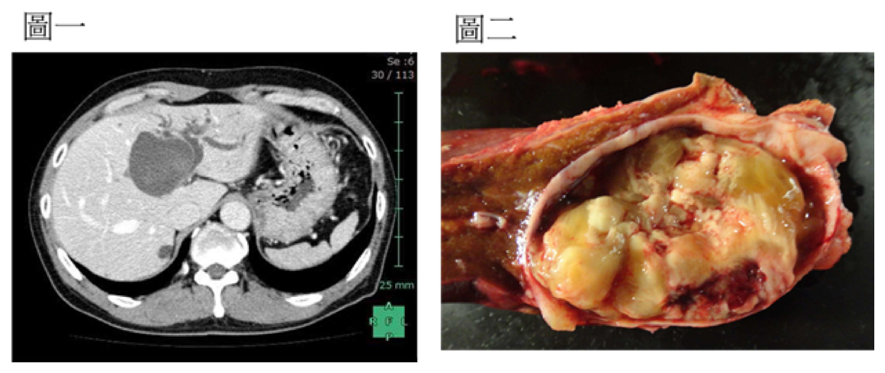
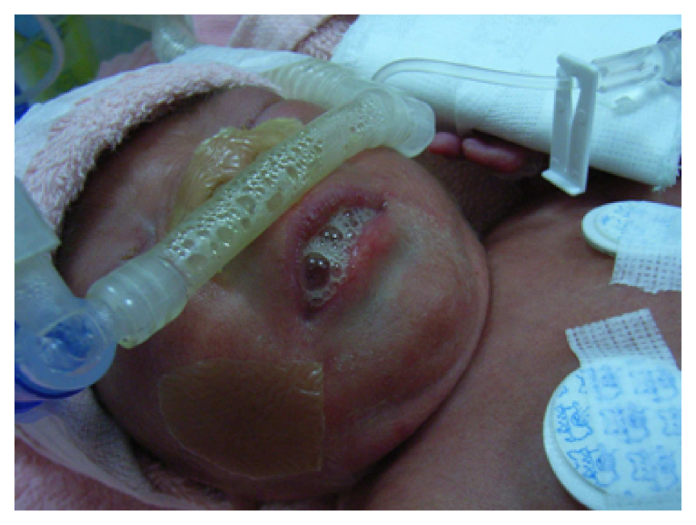
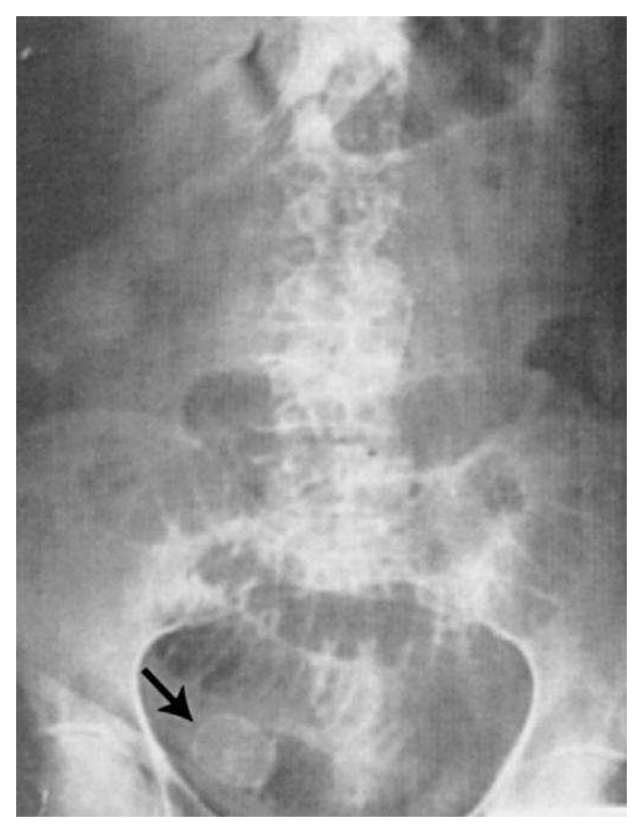
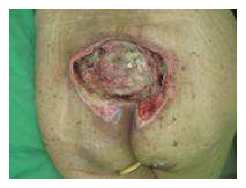
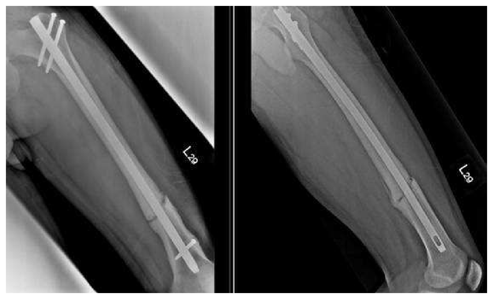
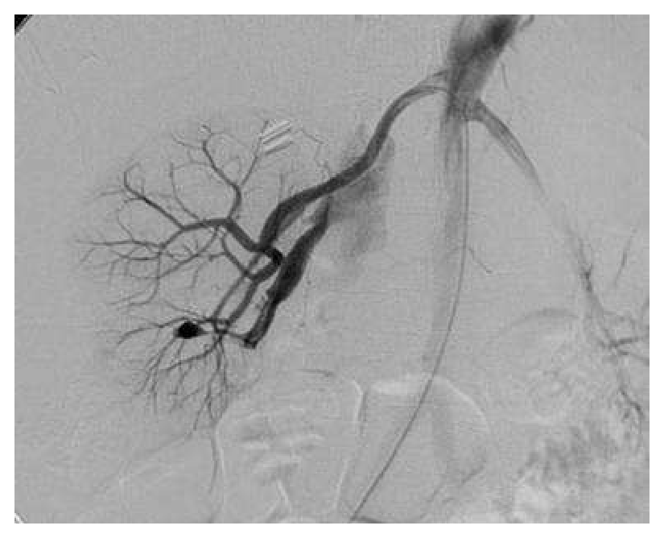
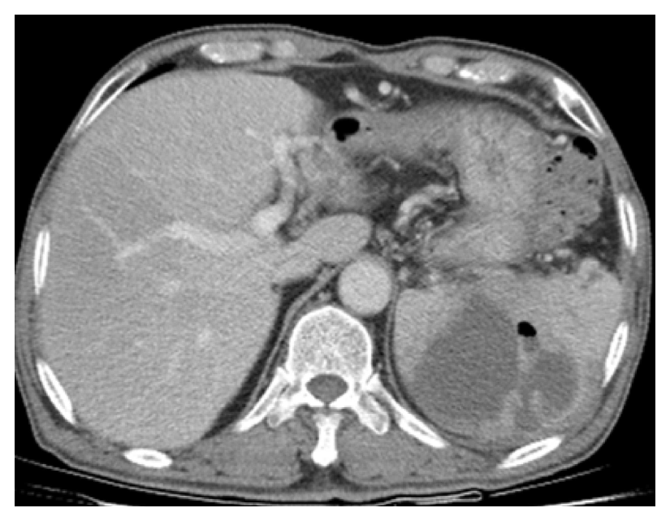
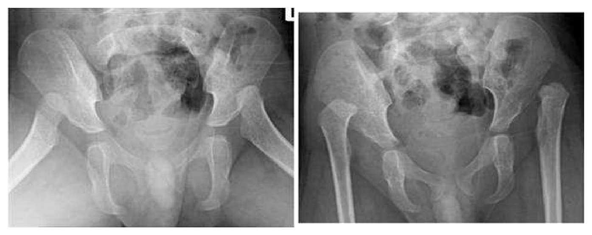

開卷有益 ／
醫師 ／ 醫學（五）（包括外科、骨科、泌尿科等科目及其相關臨床實例與醫學倫理） ／ 108 年第 2 次108 年第 2 次醫師醫學（五）（包括外科、骨科、泌尿科等科目及其相關臨床實例與醫學倫理）試題與答案
這一頁是民國 108 年第 2 次醫師醫學（五）（包括外科、骨科、泌尿科等科目及其相關臨床實例與醫學倫理）的整份歷屆試題，共 80 題，題目與標準答案出自考選部「國家考試試題及測驗式試題答案」開放資料，其中 80 題附有詳解。以下逐題列出題幹、選項與答案；要計時作答或記錄成績，請用線上練習。
考選部原始場次代碼：108080
線上作答這一科 →
全部 80 題
第 1 題
外傷死亡之病人，在外傷發生後那一個時段，死亡人數最多？
（A） 0～15 minutes（B） 1～24 hours（C） 3～7 days（D） 7～30 days答案：（A）
詳解與考點 正解：外傷死亡後「死亡人數最多」的時段。嚴重腦傷、大量出血與大血管傷等不可逆或極快速致死傷害，常在受傷後數分鐘內造成死亡；因此0～15 minutes 的即刻期死亡最多，故選 A。
B：受傷後1～24 hours 仍有可因出血、顱內傷勢或呼吸問題死亡的病人，但總數不如到院前即刻死亡高；這是黃金救援時段的重要性所在。
C：3～7 days 的死亡常與感染、器官功能障礙或併發症相關，屬較晚期死亡，非最多數的最初峰值。
D：7～30 days 更偏向長期住院併發症與多重器官問題，與立即致命創傷的時間分布不同。
本題考點：外傷死亡時間分布（trimodal distribution of trauma death）——即刻期以嚴重腦傷及大出血為主；早期救治聚焦可逆的氣道、呼吸與循環問題。
第 2 題
頸部受傷的病人接受頸部探查手術的適應症，下列何者錯誤？
（A） 頸部血腫一直擴大（B） 頸部出現皮下氣腫（C） 喘鳴（stridor）（D） 脈搏增快答案：（D）
詳解與考點 正解：頸部創傷後需要探查的明確警訊。持續脈搏增快雖可提示疼痛、失血或壓力反應，卻缺乏特異性，單獨存在不是頸部探查手術的直接適應症，故 D 錯誤。
A：持續擴大的頸部血腫可能壓迫氣道或代表持續血管出血，屬需要立即處置的硬徵象。
B：頸部皮下氣腫提示可能有氣道、喉氣管或食道損傷，需緊急評估並依整體傷勢決定探查。
C：喘鳴（stridor）代表上呼吸道狹窄或受壓，可能迅速惡化為氣道阻塞，因此須優先控制氣道並評估手術處置。
本題考點：穿透性頸部外傷（penetrating neck trauma）——擴大血腫、氣道受損線索與呼吸道阻塞是緊急處置警訊；非特異性心搏加快不能單獨決定探查。
第 3 題
人類因為感染或外傷可引發全身性發炎反應症候群（systemic inflammatory response syndrome, SIRS），其臨床表現含：①體溫＞38°C，或 ≤ 36°C ②心率 ≥ 90／分 ③呼吸速率 ≥ 20／分，或 PaCO2 ≤ 32毫米汞柱，或需要機械式通氣（mechanical ventilation） ④白血球 ≥ 12,000／微升(μL)，或 ≤ 4,000／微升(μL)，或band forms≥ 10%。若病患要被診斷為全身性發炎反應症候群，至少須合乎上列幾種條件？
（A） 一種（B） 二種（C） 三種（D） 四種答案：（B）
詳解與考點 正解：SIRS 診斷門檻。題幹列出體溫、心率、呼吸與白血球四類條件，只要其中至少2類符合，即達全身性發炎反應症候群（SIRS）的定義，故選 B。
A：只符合1類生理異常時特異性不足，尚不能符合 SIRS 的診斷門檻。
C：符合3類當然表示反應更明顯，但不是最低必要條件；把它當門檻會漏掉已符合定義的病人。
D：4類全符合也不是必要條件，SIRS 不要求所有指標都異常。
本題考點：全身性發炎反應症候群（systemic inflammatory response syndrome, SIRS）——以體溫、心率、呼吸及白血球四類生理指標評估，至少符合2類即達定義。
第 4 題
對於慢性不癒合傷口的敘述，下列何者錯誤？
（A） 最常見的原因是傷口感染（B） 放射線的暴露會造成內皮細胞（endothelial cell）的傷害和endarteritis，導致組織萎縮，纖維化和癒合延緩（C） Vitamin B12缺乏會妨礙單核細胞的活化和fibronectin沉積，然後影響細胞的黏著和妨礙TGF-β receptors（D） 糖尿病會影響傷口癒合的每一個步驟答案：（C）
詳解與考點 正解：營養缺乏造成傷口癒合障礙的機轉。選項所述單核細胞活化、fibronectin 沉積、細胞黏著與 TGF-β 相關修復受損，較屬 vitamin A 缺乏的傷口修復影響，而非 vitamin B12 缺乏，故 C 錯誤。
A：慢性不癒合傷口最常見的可處理原因之一是感染；細菌負荷與持續發炎會妨礙正常修復進程。
B：放射線可傷害血管內皮並造成 endarteritis，使局部缺血、萎縮與纖維化，因而延緩癒合。
D：糖尿病可透過微血管病變、神經病變、免疫功能異常與高血糖影響發炎、增生與重塑等癒合階段。
本題考點：慢性傷口（chronic wound）——感染、缺血、糖尿病及放射線傷害皆會延遲癒合；維生素 A（vitamin A）參與上皮化與傷口修復調節。
第 5 題
52歲男性病人在手術後抽血檢查發現血清鈉離子（serum sodium ion）的濃度為117 mEq/L。下列敘述何者正確？
（A） 此病人除了疼痛之外，沒有其他症狀（B） 此病人的低鈉血症（hyponatremia）歸類為中度低鈉血症（moderate hyponatremia）（C） 無症狀病人以含鈉輸液治療時，其輸液注射的速率應使增加的血清鈉離子濃度不超過0.5 mEq/L/hr，一天不超過8～12 mEq/L（D） 可以觀察其病情，不必採取其他的治療答案：（C）
詳解與考點 正解：術後血清鈉117 mEq/L，屬需要避免過快矯正的顯著低鈉血症。對無嚴重症狀者，以含鈉輸液矯正時應限制速度，使血鈉上升不超過0.5 mEq/L/hr，且24小時不超過8～12 mEq/L，以降低滲透性脫髓鞘症候群風險，故選 C。不同急慢性病程、症狀與高風險族群的矯正上限仍須個別化判定，故本題數值細節把握度較低。
A：低鈉血症可造成噁心、頭痛、意識改變、抽搐等神經症狀，症狀取決於下降速度與程度，不能說除了疼痛外必無其他症狀。
B：血清鈉117 mEq/L 屬嚴重低鈉血症範圍，不是中度低鈉血症。
D：即使病人暫時無症狀，也應評估容量狀態、病因、用藥與血鈉變化，並規劃適當處置及監測，不能只觀察而完全不處理。
本題考點：低鈉血症（hyponatremia）——依症狀、病因與慢急性決定治療；矯正速度需受限，以預防滲透性脫髓鞘症候群（osmotic demyelination syndrome）。
第 6 題
下列那一種胺基酸是腸黏膜細胞（enterocytes）之能量來源？
（A） histidine（B） glutamine（C） valine（D） alanine答案：（B）
詳解與考點 正解：腸黏膜細胞的主要燃料。glutamine 是快速增生的 enterocytes 重要能量與氮源，可支持腸黏膜屏障與免疫相關代謝，故選 B。
A：histidine 是必需胺基酸並參與多種蛋白質與組織胺代謝，但不是腸黏膜細胞最具代表性的燃料。
C：valine 是支鏈胺基酸，主要代謝角色不等同於 glutamine 對腸上皮細胞的偏好利用。
D：alanine 可參與葡萄糖－丙胺酸循環與肝臟代謝，但不是本題所問 enterocytes 的典型能量來源。
本題考點：麩醯胺酸（glutamine）——是腸黏膜細胞（enterocytes）與部分免疫細胞的重要代謝燃料，和腸道屏障功能相關。
第 7 題
Dandy-Walker malformation是屬於一種小兒先天性水腦症，下列何者最早產生擴大現象？
（A） 第三腦室（3rd ventricle）（B） 第四腦室（4th ventricle）（C） 大腦導水管（aqueduct）（D） 側腦室（lateral ventricle）答案：（B）
詳解與考點 正解：Dandy-Walker malformation 的解剖位置。此病變涉及後顱窩與第四腦室出口發育異常，第四腦室擴大並形成囊性變化是核心表現，因此最早擴大的是第四腦室（4th ventricle），故選 B。
A：第三腦室可在阻塞性水腦後續因腦脊髓液壓力上升而擴大，但不是 Dandy-Walker 病變最初的擴大腔室。
C：大腦導水管（aqueduct）連接第三與第四腦室；導水管狹窄時才以其上游腦室擴大為典型，並非本病的原發部位。
D：側腦室可因伴隨水腦而後續擴大；它看似是最常被影像看到的腦室擴大，但題目問的是 Dandy-Walker 畸形中最早受影響的腔室。
本題考點：Dandy-Walker 畸形（Dandy-Walker malformation）——後顱窩與第四腦室（4th ventricle）發育異常，常合併腦脊髓液循環障礙及水腦症（hydrocephalus）。
第 8 題
有關嬰兒搖晃症（shaken baby syndrome）之敘述，下列何者錯誤？
（A） 常跟虐兒（child abuse）有關，有時需要社工介入（B） 臨床上可做眼底檢查發現視網膜有出血現象（retinal hemorrhage）（C） 電腦斷層掃描可見急性硬膜下血腫（acute subdural hematoma）（D） 外觀上很容易發現異常答案：（D）
詳解與考點 正解：嬰兒搖晃症的傷害常隱藏在外觀不明顯的頭部創傷之下。反覆加減速造成腦部相對於顱骨移動，可導致硬膜下出血與視網膜出血；照顧者不一定提供正確病史，因此不能以外觀容易發現異常作為判斷，故選 D。
A：嬰兒搖晃症是非意外性傷害的重要型態，常須評估虐待風險並連結社工與兒少保護資源；此敘述正確，故不是答案。
B：眼底檢查可發現視網膜出血，是此病症常見且具警訊意義的發現之一；它看似只是眼科徵象，實際上可提示加速－減速性頭部傷害，故敘述正確。
C：急性硬膜下血腫可見於搖晃造成的橋靜脈撕裂，電腦斷層可用於急性顱內出血評估，故敘述正確。
本題考點：嬰兒搖晃症（shaken baby syndrome）屬非意外性頭部創傷；硬膜下血腫（subdural hematoma）與視網膜出血（retinal hemorrhage）是重要警訊；外觀正常不能排除嚴重顱內傷害。
第 9 題
常壓性水腦症（normal pressure hydrocephalus, NPH）經過腦室引流手術後，最容易改善的症狀是下列何者？
（A） 尿失禁（B） 痴呆（C） 步態不穩（D） 半身無力本題送分，無標準答案
詳解與考點 本題官方公告送分。
第 10 題
聽神經瘤（acoustic neuroma）最好發於下列那一條顱神經？
（A） 顏面神經（facial nerve）（B） 耳蝸神經（cochlear nerve）（C） 前庭神經（vestibular nerve）（D） 舌咽神經（glossopharyngeal nerve）答案：（C）
詳解與考點 正解：聽神經瘤的名稱雖含「聽」，其典型起源其實是第八對腦神經的前庭分支。聽神經瘤又稱前庭神經鞘瘤（vestibular schwannoma），多源於前庭神經的許旺細胞，而非耳蝸神經，故選 C。
A：顏面神經是第七對腦神經，支配表情肌；腫瘤變大可壓迫它而造成顏面症狀，但不是聽神經瘤的好發起源。
B：耳蝸神經同屬第八對腦神經，故容易因「聽覺」症狀而看似合理；但典型腫瘤起源是前庭神經分支，並非耳蝸神經。
D：舌咽神經是第九對腦神經，與咽部感覺、吞嚥及味覺相關，解剖位置與本病典型起源不符。
本題考點：前庭神經鞘瘤（vestibular schwannoma）通常起源於前庭神經（vestibular nerve）；第八對腦神經（vestibulocochlear nerve）包含前庭與耳蝸兩個功能分支；腫瘤名稱「acoustic neuroma」是常用但不精確的舊稱。
第 11 題
有關腦死判定（brain death），下列何者不是臨床要件（clinical criteria）？
（A） 患者需處於深度昏迷（deep coma），且對語言（verbal stimulation）及疼痛（pain stimulation）刺激無反應（B） 患者有自發性呼吸（spontaneous respiration）（C） 患者喪失腦幹反射（brain stem reflex）（D） 患者無自主性活動（spontaneous movement）或自主性姿態（spontaneous posturing）答案：（B）
詳解與考點 正解：題幹問腦死判定的「不是」臨床要件。腦死代表全腦功能不可逆停止，臨床評估需確認深度昏迷、腦幹反射消失與無呼吸；若仍有自發性呼吸，表示延腦呼吸中樞仍有功能，不能符合腦死，故選 B。
A：對語言與疼痛刺激均無反應的深度昏迷，是腦死臨床評估的必要前提之一，故不是答案。
C：腦幹反射消失是腦死的重要臨床要件，須以適當檢查確認，故敘述正確。
D：無自主活動或姿態可支持嚴重腦功能喪失；評估時仍須排除脊髓反射造成的動作，故此方向符合腦死判定的臨床觀察。
本題考點：腦死（brain death）須有不可逆深度昏迷（deep coma）；腦幹反射（brain stem reflex）消失；無自發呼吸（absence of spontaneous respiration）是核心條件。
第 12 題
一位20歲女性割腕自殺被送至急診室時，左手腕掌面橈側有約3公分橫向刀口，神經學檢查發現手掌五指可伸直及併指，但無法彎曲握拳，且手指腹面有麻木感，則此病人最可能為下列那一條神經受損？
（A） 橈神經（radial nerve）（B） 指神經（digital nerve）（C） 正中神經（median nerve）（D） 尺神經（ulnar nerve）答案：（C）
詳解與考點 正解：手腕掌面橈側切傷後，出現橈側手指腹感覺異常；此處最具代表性的受傷神經為正中神經，故依題目設定選 C。五指無法屈曲則更提示合併屈肌腱損傷，但屈肌腱不在選項內，不能直接歸因於腕部正中神經切斷。
A：橈神經主要支配腕、指伸肌，受損典型為手腕或手指伸展無力；本題手指仍可伸直，與橈神經損傷不符。
B：指神經受傷會造成特定一指或相鄰指側的局部感覺缺損，不能解釋橈側多指的感覺分布。
D：尺神經受損較突出的是小指側感覺異常、骨間肌無力與手指外展內收障礙；題目描述的橈側掌面切傷及感覺分布較支持正中神經。
本題考點：正中神經（median nerve）提供橈側手掌與手指掌側感覺；屈肌腱（flexor tendon）損傷會造成手指屈曲障礙；橈神經（radial nerve）損傷以伸展障礙為主。
第 13 題
王媽媽的左手中指在彎曲及伸直的交替動作中，肌腱在掌指關節處基部摸到結節（nodule），且有時會產生聲響，影響手指活動，王媽媽得了什麼疾病 ?
（A） 鎚狀指（mallet finger）（B） 扳機指（trigger finger）（C） 狹窄性肌腱滑膜炎（de Quervain tenosynovitis）（D） 手部鈕扣畸形（bontonniere deformity）答案：（B）
詳解與考點 正解：掌指關節處可摸到屈肌腱結節，手指在屈伸時卡住並發出聲響。這是屈肌腱腱鞘狹窄使結節通過滑車受阻的典型扳機指表現，故選 B。
A：鎚狀指是伸指肌腱末端受損，典型為遠端指間關節無法主動伸直，並非掌指關節處的彈響結節。
C：de Quervain tenosynovitis 影響拇指側手腕的第一伸肌腱室，常有橈側腕痛，與中指掌指關節卡彈不同。
D：鈕扣畸形是近端指間關節屈曲、遠端指間關節過伸的姿勢畸形，通常與伸肌中央束損傷相關，非本題的腱鞘卡住現象。
本題考點：扳機指（trigger finger）是狹窄性屈肌腱腱鞘炎（stenosing flexor tenosynovitis）；屈肌腱結節通過滑車困難會造成卡住、彈響與活動受限；須與拇指側腕痛的 de Quervain tenosynovitis 區分。
第 14 題
下列有關乳房重建（breast reconstruction）之敘述，何者錯誤？
（A） 根蒂式橫式腹直肌皮瓣（pedicled transverse rectus abdominis myocutaneous, TRAM flaps）比游離式橫式腹直肌皮瓣（free TRAM flaps）較容易有脂肪壞死及腹部無力（B） 淺下腹動脈皮瓣（superficial inferior epigastric artery flaps）可以不用犧牲腹直肌（C） 深下腹動脈穿通支皮瓣（deep inferior epigastric artery perforator flaps）不需要肌肉內剝離（intramusculardissection）（D） 游離皮瓣的recipient vessels通常可以接在胸背動靜脈（thoracodorsal artery and vein）或內乳動靜脈（ internalmammary artery and vein）答案：（C）
詳解與考點 正解：深下腹動脈穿通支皮瓣仍須在腹直肌內追蹤並剝離穿通支，以保留其血管蒂；它的優點是盡量保留肌肉，而不是完全不需肌肉內剝離。因此（C）「不需要肌肉內剝離」錯誤，故選 C。
A：根蒂式 TRAM 皮瓣的血流路徑與旋轉距離使脂肪壞死風險較高，且取用腹直肌較多，腹壁無力也較常見；相較游離式 TRAM 的敘述正確。
B：淺下腹動脈皮瓣可利用淺層血管供應並保留腹直肌，故不用犧牲腹直肌的敘述正確。
D：乳房游離皮瓣重建常以胸背血管或內乳血管作為受血管，兩者皆是常用選擇，故不是答案。
本題考點：深下腹動脈穿通支皮瓣（deep inferior epigastric artery perforator flap, DIEP flap）保留腹直肌但需肌肉內血管剝離；橫式腹直肌皮瓣（TRAM flap）會增加腹壁功能受損風險；受血管（recipient vessels）常選胸背或內乳血管。
第 15 題
下列有關眼瞼下垂（ptosis）的敘述，何者錯誤？
（A） 眼輪匝肌（orbicularis oculi muscle）、苗勒氏肌（Müller's muscle）和提眼瞼肌（levator palpebrae muscle）為控制我們眼瞼開合的主要肌肉（B） 眼瞼下垂可分為先天和後天，其中後天的又可根據機轉分為神經性（neurogenic）、肌肉性（myogenic）或外傷性（traumatic）（C） 霍納氏症候群（Horner's syndrome）屬於後天性眼瞼下垂，其為肌肉性機轉（myogenic mechanism）（D） 根據嚴重程度可分為輕度、中度和重度，而額肌筋膜懸吊術（frontalis muscle fascial sling technique）就是用在重度眼瞼下垂的術式答案：（C）
詳解與考點 正解：霍納氏症候群造成的眼瞼下垂機轉。交感神經路徑受損會使苗勒氏肌失去交感支配，屬神經性而非肌肉本身病變的眼瞼下垂，故（C）錯誤，選 C。
A：提眼瞼肌負責主要抬眼瞼，苗勒氏肌提供輔助抬升，眼輪匝肌負責閉眼；三者共同參與眼瞼開閉，敘述正確。
B：眼瞼下垂可分先天與後天，後天性可依病因區分神經性、肌肉性、腱膜性或外傷相關等型態；題目列出的分類方向正確。
D：嚴重眼瞼下垂若提眼瞼肌功能差，可利用額肌筋膜懸吊術讓額肌協助抬眼瞼，故敘述正確。
本題考點：霍納氏症候群（Horner syndrome）是交感神經失調造成的神經性眼瞼下垂（neurogenic ptosis）；苗勒氏肌（Müller muscle）受交感神經支配；額肌懸吊術（frontalis sling）適用於提眼瞼肌功能不佳的重度眼瞼下垂。
第 16 題
關於電傷（electrical injury），下列敘述何者正確？
（A） 電流通過體內時，因為血管的電阻最低，所以是電流傳導的主要組織，也因此血管承受最多傷害（B） 傳導大量電流的血管受傷後，可能造成血管栓塞（thrombosis）（C） 電傷若造成大範圍肌肉傷害，這些肌肉所釋放的肌球素（myoglobin）會引發阻塞性腎病變（obstructivenephropathy），治療這樣的傷患需要大量輸液，維持傷患的尿量在每公斤每小時1毫升（mL/kg/hr）左右（D） 低電壓（low-voltage）電傷的傷患，30%左右在受傷後數個月至數年間可能罹患白內障（cataract）或神經系統缺陷（neurologic deficits）答案：（B）
詳解與考點 正解：官方答案為 B；（B）傳導大量電流的血管受傷後可能發生 thrombosis，敘述正確。惟 C 所述大範圍肌肉傷害釋出 myoglobin 可經腎小管傷害及阻塞造成急性腎損傷，積極輸液維持尿量亦為常見處置，故 C 的「阻塞性腎病變」用語雖不完整，未必足以排除；本題存在選項判準爭點。
A：血液與血管的電阻較低，電流較易通過；但低電阻不代表承受最多熱傷害。焦耳熱傷害較明顯於高電阻組織，例如骨骼肌、脂肪與骨周組織。
C：大範圍肌肉壞死可釋放 myoglobin 並造成色素性急性腎損傷；腎小管阻塞是可能機轉之一，積極輸液亦為處置重點，因此不能以此機轉不精確而逕稱錯誤。
D：白內障與神經學後遺症可見於電傷，但選項將其發生比例與低電壓傷害作一概而論，缺乏正確的危險度判準。
本題考點：電傷（electrical injury）可造成延遲性血管血栓（vascular thrombosis）；橫紋肌溶解（rhabdomyolysis）釋放 myoglobin 可導致急性腎損傷；焦耳熱傷害（Joule heating）在高電阻組織較明顯。
第 17 題
35歲男性病人因騎機車車禍而頭部受傷，送至急診室，經檢查無顱內出血情形，主要症狀為右側頭皮裂傷（avulsion injury）和傷口出血，下列敘述何者錯誤？
（A） 頭皮可分為皮膚、皮下組織（subcutaneous tissue）、腱膜（galea aponeurotica）、疏鬆蜂窩組織（looseareolar tissue）和顱骨膜（pericranium）五層（B） 若病患於急診留觀期間，傷口持續出血不止，最好的方法為加壓止血合併輸血治療（C） 若有頭皮缺損範圍較大（4～8 cm2），無法直接縫合者，除了局部皮瓣外，可以考慮使用組織擴張器（tissue expander）（D） 若有頭皮缺損範圍較大（8～10 cm2），考慮使用游離皮瓣顯微重建手術治療答案：（B）
詳解與考點 正解：頭皮撕裂傷持續出血時的處置不能只停留在加壓與輸血。頭皮血管豐富且固定於緻密結締組織，受傷血管不易自行回縮；持續出血應直接辨認並結紮或縫合止血，輸血僅用於需要復甦的情況，故（B）錯誤，選 B。
A：頭皮由皮膚、緻密皮下組織、腱膜、疏鬆結締組織與顱骨膜組成，這是標準五層解剖，故敘述正確。
C：較大而無法直接縫合的頭皮缺損，可依缺損位置、血流與組織條件考慮局部皮瓣或組織擴張，敘述方向正確。
D：大範圍頭皮缺損若局部組織不足，游離皮瓣顯微重建是可考慮的重建選項，故不是答案。
本題考點：頭皮五層（SCALP layers）包含 skin、connective tissue、aponeurosis、loose areolar tissue、pericranium；頭皮傷口出血須做直接止血（definitive hemostasis）；頭皮缺損重建可用局部皮瓣、組織擴張或游離皮瓣。
第 18 題
下列何者為主動脈氣球幫浦（intra-aortic balloon pump）的最佳使用時機？
（A） 急性升主動脈剝離合併急性重度主動脈瓣逆流（B） 升主動脈瘤合併慢性重度主動脈瓣逆流（C） 二尖瓣腱索斷裂合併急性重度二尖瓣逆流（D） 感染性腹主動脈瘤合併敗血性休克答案：（C）
詳解與考點 正解：主動脈氣球幫浦在舒張期充氣以增加冠狀動脈灌流、收縮前放氣以降低後負荷，因此最適合暫時支援急性嚴重二尖瓣逆流造成的低心輸出。二尖瓣腱索斷裂會突然造成嚴重逆流與肺水腫，IABP 可作為手術前的橋接循環支持，故選 C。
A：急性升主動脈剝離合併嚴重主動脈瓣逆流時，氣球反搏的舒張期充氣會加重主動脈逆流，屬不適當情境。
B：慢性重度主動脈瓣逆流同樣可能因舒張期壓力上升而使逆流增加；雖有後負荷降低看似有利，但整體不是 IABP 的適應情境。
D：感染性腹主動脈瘤合併敗血性休克的主要問題是感染控制、血管病灶處理與敗血性循環衰竭，IABP 無法處理其核心病因。
本題考點：主動脈氣球幫浦（intra-aortic balloon pump, IABP）以舒張期增壓改善冠灌流、收縮期減壓降低後負荷；急性二尖瓣逆流（acute mitral regurgitation）可作為暫時橋接；嚴重主動脈瓣逆流（aortic regurgitation）是重要禁忌情境。
第 19 題
一位 65歲男性病人因左前胸痛至急診室求診，下列敘述何者正確？①急性主動脈剝離為鑑別診斷之一 ②若診斷急性B型主動脈剝離，可考慮以主動脈內血管支架（endovascular aortic graft）治療 ③若診斷急性心肌梗塞，須考慮經皮冠狀動脈處置（percutaneous coronary intervention） ④若診斷急性心肌梗塞，須立即執行冠狀動脈繞道術
（A） ①②③（B） ①③④（C） 僅②④（D） 僅④答案：（A）
詳解與考點 正解：65歲男性急性前胸痛必須同時處理致命鑑別診斷。①急性主動脈剝離須列入鑑別；②急性 B 型剝離在有併發症或適當解剖條件下可考慮血管內支架；③急性心肌梗塞的再灌流須考慮經皮冠狀動脈處置。④冠狀動脈繞道術不是所有急性心肌梗塞都應立即執行，故正確組合為①②③，選 A。
B：此組合包含④。急性心肌梗塞的首要再灌流通常是依臨床情境考慮 PCI，不是把立即冠狀動脈繞道術當作一律處置，故錯。
C：此組合漏掉①與③，忽略急性胸痛對主動脈剝離的鑑別及急性心肌梗塞的 PCI 評估，且仍包含錯誤的④，故錯。
D：僅④不但排除了必要的鑑別與 PCI 評估，還把非普遍立即適用的冠狀動脈繞道術當成唯一答案，故錯。
本題考點：急性胸痛（acute chest pain）須鑑別急性主動脈症候群（acute aortic syndrome）與急性心肌梗塞（acute myocardial infarction）；B 型主動脈剝離（type B aortic dissection）可依複雜度考慮血管內治療；經皮冠狀動脈處置（percutaneous coronary intervention, PCI）是重要再灌流策略。
第 20 題
下列何種檢查為診斷食道弛緩不能（achalasia）的golden standard？
（A） double-contrast esophagography（B） 上消化道內視鏡檢查（upper gastrointestinal endoscopy）（C） 食道壓測試（manometry）（D） ambulatory 24-hour pH monitoring答案：（C）
詳解與考點 正解：食道弛緩不能的確診標準。食道壓力檢查能直接量測食道蠕動及下食道括約肌鬆弛情形，顯示蠕動缺失與吞嚥後括約肌鬆弛障礙，因此是診斷 achalasia 的黃金標準，故選 C。
A：雙重對比食道攝影可見食道擴張及遠端鳥嘴狀狹窄，適合提供結構與典型影像線索，但不能取代功能性壓力確診。
B：上消化道內視鏡可排除腫瘤造成的假性弛緩不能或其他阻塞病灶；它看似能直接看到食道，卻無法完整量測括約肌鬆弛與蠕動功能。
D：24 小時 pH 監測主要用於評估胃食道逆流的酸暴露，不是診斷食道弛緩不能的標準檢查。
本題考點：食道弛緩不能（achalasia）的確診以食道壓力檢查（esophageal manometry）為準；食道攝影（esophagography）可見鳥嘴徵象；內視鏡（upper gastrointestinal endoscopy）主要用於排除機械性阻塞與假性弛緩不能。
第 21 題
關於肋膜積液，下列敘述何者錯誤？
（A） 多數惡性肋膜積液為exudate（B） 轉移性乳癌及肺癌最常造成惡性肋膜積液（C） 利用胸腔鏡手術引流同時亦有診斷的效果（D） 肋膜黏連術（pleurodesis）對治療肋膜積液無效答案：（D）
詳解與考點 正解：題幹問肋膜積液敘述何者錯誤。肋膜黏連術是讓臟層與壁層肋膜貼合、消除積液腔隙的治療，對反覆且可再膨脹肺的惡性肋膜積液尤其有用，因此（D）稱其無效是錯誤敘述，故選 D。
A：惡性肋膜積液多為滲出液（exudate），反映腫瘤造成的肋膜通透性與引流異常，故正確。
B：肺癌與乳癌是惡性肋膜積液常見的原發腫瘤，轉移性病灶可侵犯肋膜，故敘述正確。
C：胸腔鏡可同時引流積液、直接觀察肋膜並取得切片，兼具治療與診斷價值，故正確。
本題考點：惡性肋膜積液（malignant pleural effusion）通常是滲出液（exudate）；胸腔鏡（thoracoscopy）可協助肋膜切片診斷；肋膜黏連術（pleurodesis）用於適合病人的反覆肋膜積液控制。
第 22 題
對於肺癌手術，下列何者不是必要的檢查？
（A） 肺功能檢查（B） 正子攝影（positron emission tomography, PET）檢查（C） 腦血管攝影檢查（D） 胸部CT檢查答案：（C）
詳解與考點 正解：肺癌手術前評估需要腫瘤分期與心肺耐受度，而不是常規侵入性腦血管檢查。腦血管攝影用於腦血管病變的特定評估，不能提供肺癌手術所需的標準分期或肺功能資訊，故選 C。
A：肺功能檢查用於評估切除肺組織後的呼吸儲備與手術風險，是術前重要檢查。
B：PET 可協助發現代謝活躍的淋巴結或遠端轉移，對適當病人的術前分期有價值，故不是答案。
D：胸部 CT 用於判定原發腫瘤、縱膈腔與胸內結構關係，是肺癌評估的基本影像檢查。
本題考點：肺癌術前評估（preoperative assessment for lung cancer）重點包括胸部 CT（chest CT）、分期檢查與肺功能（pulmonary function）；PET（positron emission tomography）可協助分期；腦血管攝影（cerebral angiography）非例行檢查。
第 23 題
關於縱膈腔生殖細胞瘤（germ cell tumor）的敘述，下列何者錯誤？
（A） teratoma最常見（B） seminoma病人的抽血檢查可見α-fetoprotein升高（C） nonseminomatous tumor病人的抽血檢查可見β-HCG 的升高（D） seminoma對放射治療比nonseminomatous tumor有效應答案：（B）
詳解與考點 正解：縱膈腔 seminoma 與腫瘤標記的搭配。純 seminoma 不應產生 α-fetoprotein；若 AFP 升高，須考慮混有非 seminomatous 成分，而不能把它當作純 seminoma 的典型抽血結果，故（B）錯誤，選 B。
A：在縱膈腔生殖細胞腫瘤中，teratoma 是常見類型之一，故此敘述正確。
C：非 seminomatous germ cell tumor 可伴隨 β-HCG 升高，是其腫瘤標記評估的一部分，故正確。
D：seminoma 對放射治療相對敏感，與 nonseminomatous tumor 相比的放射反應較佳，故敘述正確。
本題考點：縱膈腔生殖細胞腫瘤（mediastinal germ cell tumor）包括 teratoma、seminoma 與 nonseminomatous tumor；α-fetoprotein（AFP）升高不支持純 seminoma；β-HCG 可在非 seminomatous tumor 升高。
第 24 題
王先生因為持續性腹痛而至醫院急診處就診，根據他的描述，剛開始腹痛是在肚臍周圍，幾小時後症狀加劇且腹痛位置變成右下腹，王先生之後接受手術治療，證實是急性闌尾炎。則這種型態的腹痛應為下列何者？
（A） 投射性疼痛（referred pain）（B） 由臟器性疼痛（visceral pain）轉變為腹壁性疼痛（parietal pain）（C） 由腹壁性疼痛（parietal pain）轉變成臟器性疼痛（visceral pain）（D） 慢性疼痛（chronic pain）答案：（B）
詳解與考點 正解：急性闌尾炎疼痛由臍周轉移到右下腹。早期闌尾內臟發炎的訊號經內臟傳入，定位模糊而感到臍周痛；發炎刺激壁層腹膜後，疼痛變得局限且位於右下腹，故是由內臟性疼痛轉變為腹壁性疼痛，選 B。
A：投射痛是病灶與感覺位置不同，卻因共享神經節段而把痛覺感到遠處；本題是病程由內臟腹膜擴及壁層腹膜，機轉不同。
C：此選項把疼痛演變方向顛倒。闌尾炎是先有定位不清的內臟性疼痛，後才出現局限的壁層腹膜痛。
D：急性闌尾炎的疼痛在數小時內演變，屬急性發炎表現，不是慢性疼痛。
本題考點：內臟性疼痛（visceral pain）通常定位模糊；壁層腹膜痛（parietal pain）定位明確且會隨腹膜刺激出現；急性闌尾炎（acute appendicitis）典型疼痛由臍周移至右下腹。
第 25 題
關於胃癌的手術治療，下列何者錯誤？
（A） 手術的切除邊緣（resection margin）最好距離胃癌腫瘤（cancer mass）至少5～6公分（B） 次全胃切除併邊緣無癌細胞（subtotal gastrectomy with negative margin）對於遠端胃癌（distal gastric cancer）是適當的（C） 對於胃癌之淋巴腺廓清術（lymphadenectomy），NCCN（National Comprehensive Cancer Network）建議 D2切除（D2 resection）（至少15個淋巴結）（D） 胃癌的手術治療中，脾切除（splenectomy）是常規的步驟答案：（D）
詳解與考點 正解：胃癌手術中的脾切除不是所有病人都要做的常規步驟。脾切除會增加手術風險，僅在腫瘤侵犯、特定淋巴結處理需求或其他明確適應症下考慮；因此（D）稱脾切除為常規步驟錯誤，故選 D。
A：胃癌切除須取得足夠的陰性切緣，選項所述距離反映傳統上對安全邊緣的考量；實際所需範圍仍須依腫瘤位置與浸潤型態判定，故不是本題最明確的錯誤。
B：遠端胃癌若能取得陰性切緣，次全胃切除可保留部分胃並達到腫瘤切除目的，故敘述正確。
C：淋巴結廓清與檢體淋巴結數是胃癌分期及根治手術的重要品質考量；D2 廓清的適用性與範圍須依病期、手術經驗及指引判定，屬指引時效敏感的內容，但不會使脾切除成為例行處置。
本題考點：胃癌根治手術（gastric cancer surgery）須取得陰性切緣（negative resection margin）；遠端胃癌可考慮次全胃切除（subtotal gastrectomy）；脾切除（splenectomy）非例行步驟。
第 26 題
有關肝性腦病變（hepatic encephalopathy）的敘述，下列何者錯誤？
（A） 臨床症狀可以是行為改變或手部顫動（flapping tremor）（B） 應多吃高蛋白食物以補充體力（C） 常因胃腸道出血而誘發（D） 血中氨（ammonia）濃度常升高答案：（B）
詳解與考點 正解：題幹問肝性腦病變何者錯誤。肝性腦病變的營養處置重點是足夠熱量與個別化蛋白質攝取，並非不加條件地「多吃高蛋白」；過量或未調整的蛋白負荷可能增加腸道含氮物與氨生成、加重症狀，故選 B。
A：行為改變、意識波動及拍翅樣顫抖是肝性腦病變的常見臨床表現，故正確。
C：胃腸道出血會使腸道內血液蛋白增加，經代謝後提高含氮負荷，是常見誘發因素，故正確。
D：肝臟解毒與尿素循環功能下降時，血中 ammonia 常升高；雖其濃度未必完全對應臨床嚴重度，仍是重要相關發現。
本題考點：肝性腦病變（hepatic encephalopathy）可表現拍翅樣顫抖（asterixis）；胃腸道出血（gastrointestinal bleeding）是常見誘發因子；蛋白質營養（protein nutrition）須個別化而非一概大量增加。
第 27 題
有關小腸功能之敘述，下列何者錯誤？
（A） 製造分泌somatostatin（B） 製造分泌histamine（C） 製造分泌cholecystokinin（D） 製造分泌secretin答案：（B）
詳解與考點 正解：小腸分泌的腸胃道荷爾蒙。小腸的 I 細胞可分泌 cholecystokinin、S 細胞可分泌 secretin，十二指腸亦有 D 細胞分泌 somatostatin；histamine 的主要腸胃道來源則是胃黏膜的腸嗜鉻樣細胞，故（B）錯誤，選 B。
A：somatostatin 可由十二指腸等處的 D 細胞分泌，抑制多種胃腸道分泌與激素釋放，故不是答案。
C：cholecystokinin 由近端小腸 I 細胞分泌，可促進膽囊收縮與胰酶分泌，故敘述正確。
D：secretin 由十二指腸 S 細胞分泌，主要促進胰臟與膽道鹼性分泌以中和胃酸，故正確。
本題考點：膽囊收縮素（cholecystokinin, CCK）由 I cells 分泌；分泌素（secretin）由 S cells 分泌；組織胺（histamine）在胃酸調節主要由胃的 enterochromaffin-like cells 釋放。
第 28 題
有關小腸腫瘤之敘述，下列何者錯誤？
（A） 腺癌發生的部位以十二指腸和上端空腸較多，遠端空腸或迴腸就較少（B） 若小腸癌發生在十二指腸以外，術前的正確診斷率只有50%左右（C） 手術完全切除才較有機會治癒，化學治療和放射治療效果至目前結果都不好（D） 若剖腹進去發現已有腸繫膜轉移，因預後很差，就算病患有出血或腸阻塞，也完全不用做palliative surgery答案：（D）
詳解與考點 正解：「已有腸繫膜轉移」卻合併出血或腸阻塞；轉移使根治切除機會下降，並不表示症狀性病灶絕對不可手術。若有持續出血、阻塞或穿孔風險，仍可依病人的全身狀況考慮繞道、切除或造口等緩和手術（palliative surgery）以解除症狀，故錯誤的是 D。
A：小腸腺癌（small bowel adenocarcinoma）較常見於十二指腸及近端空腸，遠端空腸與迴腸相對少見，敘述正確。
B：十二指腸以外的小腸腫瘤不易以常規上消化道內視鏡取得診斷，常在影像或手術時才發現；此選項強調術前診斷困難，方向正確，非本題答案。
C：局限性小腸癌以完整手術切除為主要可能治癒的方式；全身或放射治療的效果受腫瘤位置與期別影響，不能取代可切除病灶的根治手術，敘述可成立。
本題考點：小腸腫瘤（small bowel tumors）——可切除病灶以手術為核心；緩和手術（palliative surgery）即使不能根治，仍可為出血、阻塞等症狀提供解除。
第 29 題
下列有關切口性疝氣（incisional hernia）之敘述，何者錯誤？
（A） 源自過去腹部手術傷口張力太大或癒合不良（B） 術後傷口感染為原因之一（C） 外科手術是唯一有效的治療辦法（D） 一定要用人工膜（mesh）來修補缺口答案：（D）
詳解與考點 正解：「一定要」使用人工膜。切口性疝氣修補是否使用網片（mesh）要看缺損大小、組織條件、污染與感染風險及修補張力；網片常能降低復發，卻不是所有個案的絕對必要條件，故錯誤的是 D。
A：腹部手術切口承受張力，若筋膜閉合不良、傷口癒合障礙或長期腹壓增加，皆可能形成切口性疝氣（incisional hernia），敘述正確。
B：術後傷口感染會破壞筋膜癒合、提高切口性疝氣風險，是重要成因之一，敘述正確。
C：對有症狀、逐漸變大或有嵌頓風險的切口性疝氣，外科修補是能矯正腹壁缺損的有效治療；此選項不是在宣稱每位無症狀者都須立即開刀，故非錯誤處。
本題考點：切口性疝氣（incisional hernia）——傷口感染與筋膜癒合不良是危險因子；網片修補（mesh repair）需個別化選擇，不能以「一定」概括。
第 30 題
一位45歲自小罹患慢性B型肝炎的男性病患，主訴一個多月前覺得右上腹疼痛，有時疼痛會延伸到右邊的肩膀。最近一週至門診追蹤腹部超音波顯示有多顆肝臟腫瘤，分別是一顆2.2公分大小在S2的位置，和另一顆6.6公分大小在 S5的位置，有觀察到低迴音（hypoechoic）的腫塊。進一步安排腹部電腦斷層之後，發現在相同位置有同樣大小的腫塊，並且已經侵犯到右側肝門靜脈。其他部位的腹部超音波和電腦斷層結果皆屬正常。抽血結果發現胎兒蛋白值（AFP）為230 ng/mL，AST 53 U/L，ALT 68 U/L。則這位病人最可能的診斷為何？
（A） liver abscess with necrosis（B） hepatocellular carcinoma with portal vein thrombosis（C） multiple cavernous hemangioma（D） acute-on-chronic hepatitis答案：（B）
詳解與考點 正解：慢性 B 型肝炎是肝細胞癌（hepatocellular carcinoma, HCC）的高危險背景；多發肝腫塊、AFP 230 ng/mL 與右側門靜脈侵犯合在一起，最符合 HCC 合併門靜脈腫瘤栓塞（portal vein thrombosis），故選 B。門靜脈侵犯也是 HCC 分期與治療選擇的重要不良預後線索。
A：肝膿瘍（liver abscess）可有右上腹痛與低迴音病灶，看似能解釋疼痛；但題目有慢性 HBV、多顆肝腫瘤、AFP 上升及門靜脈侵犯，整體更支持惡性腫瘤，而非感染性壞死。
C：海綿狀血管瘤（cavernous hemangioma）是良性血管性病灶，通常不會造成 AFP 上升或侵犯門靜脈，與本例侵襲性表現不符。
D：急性加重的慢性肝炎（acute-on-chronic hepatitis）可使 AST、ALT 上升，但無法解釋兩個明確腫塊及門靜脈侵犯；本例轉胺酶僅輕度上升也不是其主軸。
本題考點：肝細胞癌（hepatocellular carcinoma, HCC）——慢性 HBV 為重要危險因子；肝占位病灶合併 AFP 上升與門靜脈侵犯，應高度懷疑 HCC 與腫瘤栓塞。
第 31 題
59歲男性因腹脹求診，電腦斷層檢查如圖一，該病人接受腹腔鏡切除手術，手術標本如圖二，下列何者正確？

（A） 該腫瘤位於肝的caudate lobe（B） 該腫瘤造成左肝管阻塞（C） 該腫瘤屬於全實心腫瘤（solid mass）（D） 該腫瘤屬於肝膿瘍答案：（B）
詳解與考點 正解：圖一可見肝門附近偏左側肝內的囊性腫瘤，壓迫左側膽道；圖二切面則見囊腔內有黃褐色、膠凍樣內容物，並非均質實性組織。此位置與腫瘤對膽道的壓迫可造成左肝管阻塞，故選 B。
A：尾狀葉（caudate lobe）位於肝臟後上方、鄰近下腔靜脈；圖一病灶主要位於肝門左側，並非尾狀葉內的腫瘤。
C：圖一病灶以低密度囊性成分為主，圖二也可見明顯囊腔及膠凍樣內容物，與全實心腫瘤（solid mass）的外觀不符。
D：肝膿瘍常見感染相關臨床表現，影像可有膿腔與周邊發炎改變；本圖手術標本呈具囊壁的腫瘤性囊腔及黏液樣內容物，較不支持肝膿瘍。
本題考點：肝囊性腫瘤（cystic liver tumor）的影像與肉眼病理判讀；肝門部病灶造成膽道阻塞（biliary obstruction）的解剖位置關係；實性腫瘤（solid mass）與囊性病灶（cystic lesion）的鑑別。
第 32 題
下列關於胰臟神經內分泌腫瘤之敘述，何者錯誤？
（A） 胰臟功能性神經內分泌腫瘤以胰島素瘤（insulinoma）最多（B） insulinoma的Whipple's triad診斷包括：低血糖，因低血糖出現的症狀及給與葡萄糖後症狀立刻緩解三項（C） insulinoma大部分是hypovascularity。在contrast enhanced CT下，易形成完全低顯影的腫塊影像（D） 發生率男、女性差不多答案：（C）
詳解與考點 正解：insulinoma 的增強電腦斷層表現。胰島素瘤通常是富血管性（hypervascular）腫瘤，在動脈期常較周圍胰實質明顯增強，而非完全低顯影的低血管性腫塊，故錯誤的是 C。
A：在功能性胰臟神經內分泌腫瘤（functional pancreatic neuroendocrine tumors）中，胰島素瘤（insulinoma）是常見類型，敘述正確。
B：Whipple's triad 包括低血糖時出現相符症狀、測得低血糖，以及補充葡萄糖後症狀緩解；選項以三項核心內容描述，正確。
D：胰島素瘤沒有明顯的單一性別偏好，男女性發生率大致相近，敘述正確。
本題考點：胰島素瘤（insulinoma）——Whipple's triad 用於辨識低血糖相關症狀；影像上常為小型富血管性（hypervascular）胰臟神經內分泌腫瘤。
第 33 題
對於肝硬化的敘述，下列何者錯誤？
（A） 經頸靜脈肝內門體靜脈分流術TIPS（transjugular intrahepatic portosystemic shunt） 會使得肝性腦病變（hepatic encephalopathy）的機會增加（B） 預防肝硬化所引起的食道靜脈瘤的首選藥物為非選擇性α-blockers（C） 不論是否伴隨著出血，末期肝衰竭病患都需考慮肝臟移植（D） 食道靜脈瘤出血處置需要外科介入的情況，包含內視鏡處理失敗，胃靜脈瘤出血和TIPS治療失敗答案：（B）
詳解與考點 正解：預防食道靜脈瘤出血的首選藥物。降低門脈壓的標準藥物是非選擇性 β 阻斷劑（nonselective beta-blockers），不是非選擇性 α 阻斷劑；後者不具此預防作用，故錯誤的是 B。
A：TIPS 建立門體分流後，腸道來源的含氮物質較少經肝臟清除，會增加肝性腦病變（hepatic encephalopathy）風險，敘述正確。
C：失代償性肝硬化或末期肝衰竭的病人，即使當下未出血，仍應評估肝臟移植（liver transplantation）的適應性；移植是改善末期肝病長期預後的重要治療。
D：食道靜脈瘤出血多先採藥物與內視鏡止血；若失敗，或為特定難治出血情境，可考慮介入放射或外科分流等救援方式，敘述方向正確。
本題考點：門脈高壓（portal hypertension）——非選擇性 β 阻斷劑可預防靜脈瘤出血；經頸靜脈肝內門體分流術（TIPS）可止血減壓，但會增加肝性腦病變風險。
第 34 題
下列何者在甲狀腺全切除術後，不適合接受碘-131治療？
（A） 甲狀腺乳突癌papillary carcinoma（T1N1aM0）（B） 甲狀腺濾泡癌follicular carcinoma（T1N1aM0）（C） 甲狀腺髓質癌medullary carcinoma（T1N1aM0）（D） 甲狀腺何氏細胞癌Hürthle cell carcinoma（T1N1aM0）答案：（C）
詳解與考點 正解：碘-131（radioiodine）治療仰賴腫瘤細胞攝取碘。甲狀腺髓質癌（medullary carcinoma）源自濾泡旁 C 細胞，通常不攝取碘，因此甲狀腺全切除後不適合以碘-131作為其腫瘤治療，故選 C。
A：甲狀腺乳突癌（papillary carcinoma）屬分化型甲狀腺癌，殘存甲狀腺組織或具適應症的病灶可利用放射性碘處理，並非不適合。
B：甲狀腺濾泡癌（follicular carcinoma）同屬分化型甲狀腺癌，保留攝碘特性，故可在適當風險分層下考慮碘-131治療。
D：何氏細胞癌（Hürthle cell carcinoma）對放射性碘的攝取常較差，看似容易被選為答案；但它屬濾泡細胞來源的分化型腫瘤，與 C 細胞來源、原則上不攝碘的髓質癌不同，不能據此說成絕對不適合。
本題考點：放射性碘治療（radioiodine therapy）——主要適用於具攝碘能力的分化型甲狀腺癌；髓質癌（medullary thyroid carcinoma）源自 C 細胞，通常不具此治療標的。
第 35 題
下列有關前哨淋巴結切片術（sentinel lymph node biopsy）的敘述，何者錯誤？
（A） 可減少腋下淋巴廓清（axillary lymph node dissection）造成手臂淋巴水腫的發生（B） 外科醫師執行前哨淋巴結切片術之經驗中，前百例若有偽陰性，不應再執行前哨淋巴結切片術（C） 乳房全切除（total mastectomy）者亦可做前哨淋巴結切片術（D） 理學檢查若摸到腋下淋巴結者，不適合做前哨淋巴結切片術答案：（B）
詳解與考點 正解：前哨淋巴結切片術（sentinel lymph node biopsy, SLNB）必須持續監測偵測率與偽陰性率；前期案例出現偽陰性應檢討技術、病人選擇與品質控制，並非一律從此不能再執行 SLNB，故錯誤的是 B。
A：SLNB 以最先接受乳房淋巴引流的節點評估腋下狀態；在適當病人可避免不必要的腋下淋巴結廓清（axillary lymph node dissection），因而減少上肢淋巴水腫，敘述正確。
C：乳房全切除時仍可同步做 SLNB；尤其全切除後淋巴引流路徑可能改變，若術前需要腋下分期，通常應在手術時完成，故敘述正確。
D：臨床摸到可疑腋下淋巴結時，需先以針吸或粗針等方式評估是否已有明確轉移；若證實節點陽性，通常不以 SLNB 作為初始腋下分期，敘述正確。
本題考點：前哨淋巴結切片術（sentinel lymph node biopsy）——可降低腋下廓清相關淋巴水腫；技術品質以偵測率與偽陰性率監測，發生偽陰性不等於永久禁做。
第 36 題
10 歲女童右側乳暈下摸到約2公分大小的硬塊，略有壓痛，下列敘述何者錯誤？
（A） 最可能為prepubertal gynecomastia（B） 左側乳房可能不久亦會出現對稱硬塊（C） 觀察追蹤（follow-up）即可（D） 安排乳房切片（biopsy）答案：（D）
詳解與考點 正解：官方答案為 D；10 歲女童乳暈下壓痛硬塊最常見是青春期乳房發育（thelarche）的乳芽，典型情況不應一開始就安排侵入性乳房切片，故 D 為預期錯項。惟 A 的 prepubertal gynecomastia 是男性乳腺組織增生的術語，不能作為女童乳房初長的正確名稱，題目有術語錯置爭點。
A：女童本例應稱青春期乳房發育或乳芽（breast bud），而非 gynecomastia；雖然選項欲表達良性荷爾蒙相關乳房組織增生，字面術語並不精確。
B：青春期乳房發育可呈不同步的單側開始，另一側日後出現相似硬塊是常見的自然過程。
C：沒有皮膚改變、血性分泌物、固定快速增大等警訊時，可先觀察追蹤（follow-up），避免過度檢查。
本題考點：青春期乳房發育（thelarche）——乳芽可暫時單側且有壓痛；男性女乳症（gynecomastia）是男性乳腺組織增生；典型女童乳芽採觀察追蹤。
第 37 題
一位45歲女性接受篩檢乳房攝影 ( screening mammography )，發現有聚集微細鈣化 ( clusteredmicrocalcification ) 屬 BI-RADS Ⅳ，乳房觸診未發現有硬塊，下列處置何者不宜？
（A） 安排定位切片手術 ( wire-localized surgical excision )（B） 安排立體定位粗針穿刺 ( stereotactic core needle biopsy )（C） 三至六個月後再追蹤乳房攝影（D） 安排乳房超音波檢查，確認有無乳房腫瘤存在答案：（C）
詳解與考點 正解：聚集微細鈣化被評為 BI-RADS Ⅳ，代表已有可疑惡性病灶，處置重點是取得組織診斷而非短期單純追蹤；因此三至六個月後才追蹤乳房攝影不宜，故選 C。
A：不可觸及而須切除診斷的鈣化病灶，可用導線定位切片手術（wire-localized surgical excision）取得病理，是合宜做法。
B：立體定位粗針穿刺（stereotactic core needle biopsy）可針對乳房攝影的鈣化病灶取樣，是常用且較微創的組織診斷方式。
D：乳房超音波未必能顯示微細鈣化，但可作為輔助檢查，評估是否存在可對應的腫塊或其他病灶；它不能取代切片，卻不屬不宜處置。
本題考點：BI-RADS 4（Breast Imaging Reporting and Data System category 4）——影像可疑病灶需組織診斷；微細鈣化常以立體定位切片（stereotactic biopsy）或定位手術切除處理。
第 38 題
下列有關乳房Paget disease之敘述，何者錯誤？
（A） 一種由乳管內乳癌（intraductal carcinoma）生成之乳癌（B） 原始病灶在乳暈（C） 乳頭及乳暈皮膚呈濕疹樣（eczematous eruption）或牛皮疹（psoriatic rash）（D） 需切片檢查以鑑別診斷皮膚病變答案：（B）
詳解與考點 正解：乳房 Paget disease 的乳頭、乳暈病變多是下方乳管內癌或乳癌延伸至表皮的表現，並非原始病灶位在乳暈；故「原始病灶在乳暈」錯誤，選 B。
A：乳房 Paget disease 常與乳管內癌（ductal carcinoma in situ）或其下方侵襲性乳癌相關，乳管腫瘤細胞可進入乳頭表皮，敘述正確。
C：乳頭及乳暈可呈慢性濕疹樣（eczematous）或類乾癬樣皮疹，常見鱗屑、紅斑、搔癢或潰瘍，敘述正確。
D：其皮膚表現容易被誤認為濕疹等良性皮膚病；持續的單側乳頭病灶需切片（biopsy）鑑別，敘述正確。
本題考點：乳房 Paget disease（mammary Paget disease）——乳頭乳暈皮疹可能反映下方乳管癌；皮膚外觀與濕疹相似時，組織切片（biopsy）是關鍵鑑別。
第 39 題
一體重約2200克之肛門閉鎖（imperforate anus）女嬰，出生後3小時發現有發紺，呼吸急促，嘴角不時有泡沫狀透明唾液流出（如下圖），其最可能合併什麼問題？

（A） 十二指腸閉鎖（duodenal atresia）（B） 肥厚性幽門狹窄（hypertrophic pyloric stenosis）（C） 食道閉鎖（esophageal atresia）（D） 橫膈膜疝氣（diaphragmatic hernia）答案：（C）
詳解與考點 正解：女嬰出生後即出現發紺、呼吸急促及口角持續溢出泡沫狀透明唾液，圖中可見口角有泡沫狀透明分泌物；結合出生後即發紺、呼吸急促，為食道閉鎖的典型臨床警訊，這是食道閉鎖（esophageal atresia）的典型表現。若合併氣管食道瘻管，唾液或胃內容物還可進入呼吸道而造成嗆咳、呼吸窘迫與發紺。肛門閉鎖亦可與食道閉鎖同屬先天多重畸形的組合，故選 C。
A：十二指腸閉鎖多在出生後餵食時以膽汁性嘔吐與腹部影像的雙泡徵象表現；它不會使口胃管停在上段食道，也無法解釋出生後即持續流出泡沫唾液。
B：肥厚性幽門狹窄通常在出生數週後才出現進行性、非膽汁性噴射性嘔吐，並非出生後數小時的唾液滯留與呼吸窘迫，時序及表現皆不符。
D：橫膈膜疝氣可使新生兒呼吸窘迫與發紺，但常因腹腔臟器進入胸腔造成患側呼吸音下降、腹部舟狀；無法解釋圖中大量口腔泡沫狀分泌物。
本題考點：食道閉鎖（esophageal atresia）的新生兒警訊為無法吞嚥唾液、口角泡沫分泌物、嗆咳與發紺，口胃管無法通過食道進入胃是重要線索；氣管食道瘻管（tracheoesophageal fistula）可造成吸入性呼吸症狀；肛門閉鎖（imperforate anus）應警覺合併其他先天畸形。
第 40 題
關於兒童肌性斜頸症（torticollis），下列敘述何者正確？①為胸鎖乳突肌纖維化所引起 ②臉部向患側旋轉受限制 ③對側臉部發育不良 ④皆須手術治療
（A） ②④（B） ①③④（C） 僅①②（D） ①②③答案：（C）
詳解與考點 正解：兒童肌性斜頸（congenital muscular torticollis）主要由胸鎖乳突肌（sternocleidomastoid muscle）攣縮或纖維化造成，並造成頸部特定方向旋轉受限；依題目組合，正確的是①②，故選 C。多數嬰兒經姿勢調整與伸展治療可改善，並非都需手術。
A：②④包含「皆須手術治療」。肌性斜頸的第一線通常是物理治療與居家伸展，只有持續嚴重攣縮等少數情況才考慮手術，因此④錯誤。
B：①③④同時納入④；即使①正確，④的絕對敘述仍使整個組合錯誤。③所稱對側臉部發育不良也不是本題採用的典型表述。
D：①②③多列入③。長期姿勢不對稱可造成顏面與顱骨不對稱，但其側別應依頭位與受累肌肉判讀，不能以「對側臉部發育不良」作為本題的正確固定敘述，故不選。
本題考點：先天性肌性斜頸（congenital muscular torticollis）——胸鎖乳突肌（sternocleidomastoid muscle）攣縮造成頭頸姿勢與活動度異常；物理治療（physical therapy）是主要初始治療。
第 41 題
Ladd procedure是下列何種疾病的手術方法?
（A） 小腸閉鎖（intestinal atresia）（B） 十二指腸閉鎖（duodenal atresia）（C） 巨大結腸症（Hirschsprung's disease）（D） 腸扭轉異常（anomalies of intestinal rotation）答案：（D）
詳解與考點 正解：Ladd procedure 是為腸旋轉異常（intestinal malrotation）及其可能造成的中腸扭轉（midgut volvulus）所設計的手術。其原則包括解除 Ladd bands、擴大腸繫膜根部並將腸道置於較不易再扭轉的位置，故選 D。
A：小腸閉鎖（intestinal atresia）的處置重點是切除閉鎖段或重建腸道通暢，並非 Ladd procedure。
B：十二指腸閉鎖（duodenal atresia）通常以繞過閉鎖處的吻合術重建通路，與矯正腸旋轉異常的 Ladd procedure 不同。
C：巨大結腸症（Hirschsprung's disease）是腸神經節細胞缺失造成的功能性阻塞，治療為切除無神經節腸段並作拉下手術（pull-through procedure），非 Ladd procedure。
本題考點：Ladd procedure——用於腸旋轉異常（intestinal malrotation）與中腸扭轉（midgut volvulus）的預防或治療；須與腸閉鎖及 Hirschsprung's disease 的重建手術區分。
第 42 題
下列何者是兒童惡性橫紋肌肉瘤（rhabdomyosarcoma）較不好發的部位？
（A） 頭頸部（B） 四肢（C） 腸胃道（D） 泌尿道系統答案：（C）
詳解與考點 正解：兒童惡性橫紋肌肉瘤（rhabdomyosarcoma）常見於頭頸部、泌尿生殖道與四肢等有橫紋肌或間葉組織的區域；腸胃道是相對較不好發的部位，故選 C。
A：頭頸部是兒童橫紋肌肉瘤的重要好發區域，尤其可見於眼眶及鼻咽旁等部位，非答案。
B：四肢亦可發生橫紋肌肉瘤，常歸入肢體型病灶，非相對最少見的腸胃道。
D：泌尿道系統，特別是膀胱與前列腺等泌尿生殖道區域，是胚胎型橫紋肌肉瘤的典型發生位置，非答案。
本題考點：橫紋肌肉瘤（rhabdomyosarcoma）——兒童常見軟組織肉瘤之一；常見部位包括頭頸、泌尿生殖道與四肢，腸胃道相對少見。
第 43 題
有關隱睪症（cryptorchidism）的敘述，下列何者錯誤？
（A） 可能合併腹股溝疝氣（B） 手術以睪丸固定術（orchidopexy）為主（C） 未經治療的隱睪症病患日後有可能造成不孕（D） 手術的時機為學齡後答案：（D）
詳解與考點 正解：隱睪症（cryptorchidism）的睪丸固定術（orchidopexy）應在幼兒早期完成，以降低生育功能受損及日後腫瘤追蹤困難；不應等到學齡後才手術，故錯誤的是 D。
A：隱睪症常可合併鞘狀突未閉合，因此可能伴隨腹股溝疝氣（inguinal hernia），敘述正確。
B：可觸及且未下降的睪丸，手術主要以睪丸固定術（orchidopexy）將睪丸置於陰囊為原則，敘述正確。
C：未治療的隱睪症長期暴露於較高溫環境，會損害生精功能，並可能造成不孕或生育力下降，敘述正確。
本題考點：隱睪症（cryptorchidism）——與腹股溝疝氣及生育力受損相關；睪丸固定術（orchidopexy）應於早期施行，而非延至學齡後。
第 44 題
陳奶奶今年75歲，胃手術後長期右上腹疼痛，但陳奶奶並不以為意，有天突然腹脹、噁心嘔吐到急診就診，腹部X光（如下圖）檢查發現右下方有一顆radiopaque（箭頭處）的mass，下列何項診斷最符合陳奶奶的臨床表現？

（A） 異物形成的bezoar（B） gallstone ileus（C） 尿道結石（D） 骨盆腔鈣化腫瘤答案：（B）
詳解與考點 正解：高齡患者長期右上腹疼痛，暗示既往膽石症；現出現腹脹、噁心、嘔吐等腸阻塞表現。腹部 X 光可見右下腹腸腔內的異位 radiopaque 膽石，最符合膽石經膽腸瘻進入腸道、卡於遠端小腸造成阻塞的 gallstone ileus，故選 B。
A：胃手術後確實是 bezoar 的危險因子，且 bezoar 也可造成腸阻塞；但其 X 光通常呈腸腔內含氣的斑駁團塊，未必形成明顯鈣化的 radiopaque 結石。結合長期右上腹痛及右下腹不透光結石，較支持 gallstone ileus。
C：尿道結石位於泌尿道，主要引起排尿疼痛、血尿或尿路阻塞，不能解釋腸阻塞症狀與異位結石。
D：骨盆腔鈣化腫瘤可呈鈣化陰影，但通常不會在此臨床脈絡下突然造成典型小腸阻塞。
本題考點：膽石性腸阻塞（gallstone ileus）——膽石經膽腸瘻進入腸腔並嵌頓；Rigler triad 包括腸阻塞、異位膽石（ectopic gallstone）與膽道氣體（pneumobilia）。
第 45 題
primary hyperparathyroidism造成的併發症中，下列何者無關？
（A） osteoporosis, osteopenia（B） tetany（C） depression, anxiety（D） kidney stone答案：（B）
詳解與考點 正解：原發性副甲狀腺機能亢進（primary hyperparathyroidism）的核心生化異常是高血鈣。手足搐搦（tetany）是低血鈣造成神經肌肉興奮性上升的典型表現，故與原發性副甲狀腺機能亢進無關，選 B。
A：長期副甲狀腺素過多會增加骨吸收，造成骨量減少、骨質缺乏或骨質疏鬆（osteopenia/osteoporosis），敘述相關。
C：高血鈣可伴隨疲倦、情緒低落、焦慮或認知與精神症狀；因此 depression、anxiety 可為相關臨床表現。
D：高血鈣與尿鈣增加可促進腎結石（kidney stone）形成，是原發性副甲狀腺機能亢進的常見併發症。
本題考點：原發性副甲狀腺機能亢進（primary hyperparathyroidism）——高血鈣可造成骨病變、腎結石及精神症狀；手足搐搦（tetany）反而提示低血鈣。
第 46 題
下列關於甲狀腺手術前的照護，何者錯誤？
（A） Graves' disease病人，手術前給予Lugol's iodine solution（B） hyperthyroidism病人，先給予抗甲狀腺藥物（C） 常規手術應給予預防性抗生素（D） 聲音嘶啞的病人，手術前應做laryngoscopy答案：（C）
詳解與考點 正解：常規乾淨的甲狀腺手術（thyroid surgery）一般不需例行預防性抗生素；沒有污染或特殊感染高風險時，常規給藥無法成為標準必要照護，故錯誤的是 C。
A：Graves' disease 病人術前可給 Lugol's iodine solution，以降低甲狀腺血流與荷爾蒙釋放，作為術前準備的一環，敘述正確。
B：甲狀腺機能亢進（hyperthyroidism）病人應先以抗甲狀腺藥物控制功能狀態，再安排非緊急手術，以降低甲狀腺風暴等圍手術期風險，敘述正確。
D：術前聲音嘶啞可能表示既存喉返神經功能異常或侵犯；喉鏡檢查（laryngoscopy）可記錄聲帶活動度並協助規劃手術，敘述正確。
本題考點：甲狀腺手術術前評估（preoperative thyroid surgery care）——先控制甲狀腺機能亢進並評估聲帶；乾淨手術的預防性抗生素（prophylactic antibiotics）不應例行使用。
第 47 題
一位路倒病人被救護車送到急診室時發現眼睛僅對痛有反應，會發出嗯嗯啊啊的呻吟，四肢呈現不正常的彎曲（abnormal flexion），病人的昏迷指數（Glasgow coma scale）是幾分？
（A） 6（B） 7（C） 8（D） 9答案：（B）
詳解與考點 正解：三個 Glasgow coma scale（GCS）項目，需分別計分再相加：眼睛僅對痛有反應為 E2；呻吟屬不適當發聲為 V2；不正常彎曲為 M3。總分為 2+2+3=7，故選 B。
A：6 分會低估至少一個反應項目；本例已有睜眼、發聲及對疼痛的運動反應，各項相加不是 6 分。
C：8 分看似接近，卻是把其中一項反應高估；題幹明示的是呻吟 V2 與不正常彎曲 M3，不能以較佳反應計分。
D：9 分同樣高估了病人的語言或運動反應，與「僅對痛有反應」及「不正常彎曲」不符。
本題考點：格拉斯哥昏迷指數（Glasgow Coma Scale, GCS）——由睜眼（eye）、語言（verbal）與運動（motor）反應相加；計分題須逐項辨識後再加總。
第 48 題
承上題，在急救過程當中需要中央靜脈導管給與大量的靜脈輸液，下列何者不是最常使用的血管？
（A） 內頸靜脈（internal jugular vein）（B） 股靜脈（femoral vein）（C） 頭靜脈（cephalic vein）（D） 鎖骨下靜脈（subclavian vein）答案：（C）
詳解與考點 正解：承前題為需大量靜脈輸液的急救病人，常用中央靜脈導管（central venous catheter）置入部位包括內頸靜脈、鎖骨下靜脈與股靜脈。頭靜脈（cephalic vein）是上肢表淺靜脈，通常不是最常用的中央靜脈導管直接置入血管，故選 C。
A：內頸靜脈（internal jugular vein）是常用中央靜脈通路，超音波導引可協助安全置管，非答案。
B：股靜脈（femoral vein）也是急救情境常用的中央靜脈通路，尤其在其他部位不易立即取得時，非答案。
D：鎖骨下靜脈（subclavian vein）可供中央靜脈導管置入，是傳統常用部位之一，非答案。
本題考點：中央靜脈導管（central venous catheter）——常用置入處為內頸、鎖骨下及股靜脈；頭靜脈（cephalic vein）主要屬周邊表淺靜脈，非典型直接中央置管路徑。
第 49 題
70歲老先生因中風長期臥床，在他的薦骨部有一面積10×8公分深可見骨的褥瘡（pressure sore）（如下圖），造成褥瘡的最主要原因是：

（A） 摩擦（friction）（B） 壓力（pressure）（C） 剪力（shearing force）（D） 傷口衛生照顧不良（poor hygiene）答案：（B）
詳解與考點 正解：此病人長期臥床，薦骨位於骨突處且持續承受身體重量；題幹所述薦骨褥瘡的嚴重程度，符合嚴重壓力性損傷。持續壓力使骨突與床面之間的軟組織受壓，造成微血管灌流受阻、缺血與組織壞死，是形成褥瘡最主要的原因，故選 B。
A：摩擦是皮膚與床單等表面反覆摩擦造成的表淺皮膚損傷，可使皮膚屏障受損並增加褥瘡風險；但不足以單獨解釋圖中深及骨面的嚴重組織壞死，並非最主要機轉。
C：剪力是身體下滑時，皮膚相對固定於床面而深部組織被牽拉、扭曲，可造成深部血管受損，常與壓力共同加重傷害；然而本題的核心危險因子是長期臥床下薦骨骨突承受持續壓力，故剪力不是最主要原因。
D：傷口衛生照顧不良會增加污染、感染及癒合不良的機會，使既有傷口惡化；但褥瘡最初形成的關鍵是局部持續受壓造成缺血，而非衛生不良。
本題考點：壓力性損傷（pressure injury）主要由骨突處持續壓力造成局部缺血壞死；剪力（shear）與摩擦（friction）是加重因子；嚴重全層組織缺損可深及肌肉、肌腱或骨。
第 50 題
承上題，在清創手術治療後，下列何種皮瓣最適宜覆蓋此處褥瘡傷口？
（A） 臀大肌肌皮瓣（gluteus maximus myocutaneous flap）（B） 張闊筋膜肌皮瓣（tensor fascia latae myocutaneous flap）（C） 闊背肌肌皮瓣（latissimus dorsi myocutaneous flap）（D） 腹直肌肌皮瓣（rectus abdominis myocutaneous flap)答案：（A）
詳解與考點 正解：承前題為長期臥床病人的薦骨部深層褥瘡，清創後需要厚實、血流良好且能填補薦骨區死腔的局部組織。臀大肌肌皮瓣（gluteus maximus myocutaneous flap）鄰近薦骨、組織量充足，最適合覆蓋此處傷口，故選 A。
B：張闊筋膜肌皮瓣（tensor fascia latae myocutaneous flap）較常用於髖部、轉子等區域的軟組織重建；雖可提供覆蓋，看似也是肌皮瓣，但其解剖位置不如臀大肌適合薦骨褥瘡。
C：闊背肌肌皮瓣（latissimus dorsi myocutaneous flap）常用於胸壁、乳房或上背部重建，距離薦骨傷口遠，並非此處的優先局部皮瓣。
D：腹直肌肌皮瓣（rectus abdominis myocutaneous flap）多用於腹壁、骨盆或乳房重建，取瓣範圍與供區代價均不如臀大肌適用於薦骨區褥瘡。
本題考點：壓瘡重建（pressure sore reconstruction）——薦骨深層褥瘡清創後需以血流良好的肌皮瓣填補；臀大肌肌皮瓣（gluteus maximus myocutaneous flap）是薦骨區的重要選擇。
第 51 題
一位2星期大的男嬰，出生時體重3000 gm，Apgar score 8至9分，身體檢查並沒有發現異常現象。幾天前，開始有呼吸急促及發紺的現象，急送某醫學中心。經心臟超音波檢查發現病人有肺動脈瓣閉鎖的現象，經投予前列腺素靜脈注射，病人的發紺改善了。請依此回答下列 3 題：改善的原因為何？
（A） 肺動脈瓣打開，改善肺動脈血流（B） 開放性動脈導管再度打開，改善肺動脈血流（C） 經由心房中隔缺損，肺動脈血流增加（D） 經由體動脈至肺動脈之側枝循環，增加肺動脈血流答案：（B）
詳解與考點 正解：肺動脈瓣閉鎖時，肺血流可依賴動脈導管。前列腺素 E1（prostaglandin E1）靜脈注射的作用是維持或重新開放動脈導管（patent ductus arteriosus），使血液可由主動脈流入肺動脈，肺血流增加而發紺改善，故選 B。
A：肺動脈瓣閉鎖是瓣膜本身的結構性阻塞，前列腺素不會直接把閉鎖的肺動脈瓣打開，故錯。
C：心房中隔的分流可協助靜脈血在心房層級混合，但不會直接建立到肺動脈的主要血流出口；本例改善的關鍵是動脈導管，故錯。
D：體動脈至肺動脈側枝循環可能在某些先天性心臟病的長期狀態出現，但前列腺素的即時作用並不是增加這些側枝循環，而是維持動脈導管開放，故錯。
本題考點：導管依賴型先天性心臟病（ductal-dependent congenital heart disease）——肺動脈瓣閉鎖的肺血流可仰賴動脈導管；前列腺素 E1（prostaglandin E1）用以維持動脈導管開放。
第 52 題
在考慮進一步手術治療方式前，再仔細作超音波檢查，發現他的右心室發育不良，沒有心室中隔缺損，右心室竇（sinusoid）與左冠狀動脈有相通，作心導管檢查，右心室攝影時，顯影劑在心縮期，可進入左冠狀動脈，且看到左主冠狀動脈出口有狹窄。綜合這些檢查結果，那一種手術治療的方式最佳？
（A） 肺動脈瓣切開術（B） Blalock-Taussig分流術（C） 利用體外循環幫忙，作跨肺動脈環部布塊（transannular patch）來擴大右心室出口徑（D） 肺動脈瓣切開術加Blalock-Taussig分流術答案：（B）
詳解與考點 正解：右心室發育不良合併右心室竇與左冠狀動脈相通，且左主冠狀動脈出口狹窄，表示冠狀動脈灌流可能依賴右心室高壓。若直接降低右心室壓力，可能造成冠狀動脈灌流不足與心肌缺血；因此應先以 Blalock-Taussig 分流術建立肺血流、避免右心室減壓，故選 B。
A：肺動脈瓣切開術會使右心室減壓；在冠狀動脈依賴右心室灌流的情況，這個看似能解除肺動脈出口阻塞的作法反而可能危及冠狀動脈灌流。
C：跨肺動脈環部布塊會擴大右心室出口並顯著降低右心室壓力，與本題須保留右心室壓力以支持異常冠狀動脈循環的原則不符。
D：合併（A）肺動脈瓣切開術仍會造成右心室減壓；即使另作分流，也不能消除減壓對依賴右心室冠狀動脈灌流的風險。
本題考點：肺動脈瓣閉鎖合併完整心室中隔（pulmonary atresia with intact ventricular septum）；右心室依賴性冠狀動脈循環（right ventricle-dependent coronary circulation）；系統肺動脈分流術（Blalock-Taussig shunt）用於建立肺血流而避免不當右心室減壓。
第 53 題
依此病人心臟狀態，他最後的手術矯正方式，可以朝著那個方向進行？
（A） 維持兩個心室之修補方式（two-ventricular repair）（B） 只要肺動脈瓣置換就可（C） 單心室之修補方式（single ventricular repair），即全腔靜脈肺動脈吻合術（total cavopulmonary connection，TCPC）（D） 只要三尖瓣置換就可答案：（C）
詳解與考點 正解：承前題，右心室發育不良且冠狀動脈循環受右心室高壓影響，右心室不能安全地承擔完整肺循環的幫浦功能，也不宜藉擴大右心室出口來減壓。因此矯正方向應採單心室循環，將全身靜脈血直接導向肺動脈的全腔靜脈肺動脈吻合術（TCPC），故選 C。
A：雙心室修補需要右心室有足夠容量與功能，且通常涉及建立右心室至肺動脈的有效血流；本題右心室嚴重發育不良並有冠狀動脈灌流限制，不是合適條件。
B：單純肺動脈瓣置換只能處理瓣膜問題，無法改善右心室發育不良或異常冠狀動脈灌流的根本限制。
D：單純三尖瓣置換同樣不能讓低發育的右心室具備雙心室循環所需的容量與輸出功能。
本題考點：單心室修補（single-ventricle repair）；全腔靜脈肺動脈吻合術（total cavopulmonary connection, TCPC）；右心室發育不良合併冠狀動脈異常時，手術策略取決於右心室與冠狀動脈灌流是否能安全支持雙心室循環。
第 54 題
一位58歲婦女，因下腹部悶痛且大便次數頻繁至大腸直腸外科門診，下列何者不是門診須立刻安排的檢查項目？
（A） 腹部理學檢查（B） 肛門指診（C） 陰道指診（D） 電腦斷層答案：（D）
詳解與考點 正解：門診初評的下腹悶痛與排便習慣改變。第一步應先完成腹部、肛門直腸及女性骨盆的理學檢查，以辨識壓痛、腫塊、直腸病灶或婦科來源；尚未有初步檢查發現時，電腦斷層不是須立刻安排的常規項目，故選 D。
A：腹部理學檢查可評估腹部壓痛、腫塊、腹膜刺激徵象與腸阻塞線索，是初診不可省略的基本評估。
B：肛門指診可直接發現低位直腸腫塊、出血、疼痛或糞便性狀異常，對大腸直腸門診症狀尤其重要。
C：女性有下腹症狀時，陰道指診可協助評估骨盆腔、子宮附件及直腸陰道隔病灶，屬合理的初步理學檢查。
本題考點：下腹痛與排便習慣改變（change in bowel habit）的初步評估；腹部檢查（abdominal examination）；肛門直腸與骨盆腔理學檢查（digital rectal and pelvic examination）應先於進階影像安排。
第 55 題
承上題，經檢查後發現糞便內混有血跡，直腸無異常，下列何者是後續最適當之檢查項目？
（A） 電腦斷層掃描（B） 大腸鋇劑X光攝影檢查（C） 大腸鏡纖維內視鏡檢查（D） 腹部超音波檢查答案：（C）
詳解與考點 正解：承前題，58歲女性有排便習慣改變且糞便混血，直腸指診無異常仍須評估較近端的大腸病灶。大腸鏡可直接觀察全大腸黏膜、定位出血來源，並可切片或處理息肉，是後續最適當的檢查，故選 C。
A：電腦斷層可用於分期、併發症或特定腹腔病灶評估，但對黏膜病灶的直接診斷與組織採樣不如大腸鏡，不能取代首選檢查。
B：大腸鋇劑攝影可顯示部分腸腔輪廓，但無法切片，也較難發現細小黏膜病灶；它看似能檢查大腸，卻不如大腸鏡能同時診斷與取樣。
D：腹部超音波不擅長檢視腸道黏膜與大腸腔內出血來源，對本題的警訊症狀不足以完成評估。
本題考點：下消化道出血（lower gastrointestinal bleeding）；大腸鏡檢查（colonoscopy）可直接觀察、切片與治療；排便習慣改變合併血便須排除大腸腫瘤與其他結腸病灶。
第 56 題
有關惡性骨腫瘤的敘述，下列何者最正確？
（A） Enneking stage IIB是指高惡性度，同一腔室內的病灶（intra-compartmental lesion）（B） 目前惡性骨肉瘤（osteosarcoma）的標準治療，是先切除腫瘤，再輔以術後放射治療，以避免局部復發（C） 惡性軟骨瘤（chondrosarcoma）的治療主要是手術切除病灶（D） 肢體保留手術與截肢手術相比，局部腫瘤復發率較高，同時接受肢體保留手術患者存活率較低答案：（C）
詳解與考點 正解：惡性軟骨瘤的治療特性。惡性軟骨瘤對傳統化學治療及放射治療通常反應有限，根治主要仰賴依腫瘤分級與位置取得足夠切除邊界的手術切除，故選 C。
A：Enneking 分期的 IIB 指高惡性度且跨腔室（extracompartmental）的病灶；同一腔室內應是 IIA，故分期配對錯誤。
B：骨肉瘤的標準治療核心是多藥化學治療合併廣泛手術切除，常先給新輔助化學治療；術後常規放射治療並非取代系統性化學治療的標準策略。
D：在適當病例、取得足夠切除邊界及接受現代輔助治療下，肢體保留手術的存活率不低於截肢；不能概括說其局部復發率較高且存活率較低。
本題考點：惡性軟骨瘤（chondrosarcoma）的局部控制以手術切除為主；Enneking staging system；骨肉瘤（osteosarcoma）需區分化學治療、手術與放射治療各自角色。
第 57 題
一位32歲男性左股骨幹骨折（femoral shaft fracture），手術後2年半，仍時常感到左大腿疼痛，無法負重行走，其X光檢查結果如下圖。下列敘述何者錯誤？

（A） 可能造成骨折不癒合（nonunion）因素包括受傷時合併嚴重軟組織傷害、感染、骨折固定不夠穩定、營養不良、吸煙、長期使用類固醇等（B） 骨折的手術治療，應盡量將骨折斷端的軟組織從骨頭上剝離（excessive soft tissue stripping from bone），以充分檢視骨折斷端並對齊固定，可減少骨折不癒合（nonunion）的發生（C） 此病例的診斷為增生性不癒合（hypertrophic nonunion），常因為骨折固定的穩定度不足而造成（D） 此病例可採用更換較大的骨髓內釘（intramedullary nail）及骨移植（bone grafting）進行治療答案：（B）
詳解與考點 正解：圖中左股骨骨髓內釘固定後，骨折處可見明顯肥厚、不規則的骨痂，但骨折線仍未橋接癒合，符合增生性不癒合（hypertrophic nonunion）。此型態表示生物活性與血液供應尚可，主要問題通常是固定穩定度不足。骨折手術時若過度剝離骨折端軟組織，反會破壞骨膜血流與骨折周邊生物環境、增加不癒合風險；故（B）所稱可減少不癒合為錯誤敘述。
A：嚴重軟組織傷害、感染、固定不穩、營養不良、吸煙及長期使用類固醇，皆可能分別透過降低血流與修復能力、造成感染性破壞或增加骨折端微動而導致不癒合，敘述正確，非本題答案。
C：增生性不癒合的影像特徵是骨痂形成旺盛而未能跨越骨折端；圖中可見骨折周邊肥厚骨痂，與固定不足造成持續不當微動的機轉相符，敘述正確。
D：對於股骨幹增生性不癒合，更換較大、可提供較佳穩定性的骨髓內釘可改善力學環境；合併骨移植亦可作為促進癒合的治療策略，敘述正確。
本題考點：骨折不癒合（nonunion）——須同時評估生物活性、血流、感染與固定穩定性；增生性不癒合（hypertrophic nonunion）——骨痂旺盛但穩定度不足；骨折生物學（fracture biology）——保留骨折端軟組織與血供是促進癒合的重要原則。
第 58 題
俗稱「媽媽手」的腕部肌腱炎，稱作DeQuervain氏症，是腕部六個伸肌腱腔室（compartment）中最靠橈側的第一腔室內的肌腱發炎。這包括下列那一條肌腱？
（A） 橈側伸腕短肌腱（extensor carpi radialis brevis tendon）（B） 橈側伸腕長肌腱（extensor carpi radialis longus tendon）（C） 拇指伸展長肌腱（extensor pollicis longus tendon）（D） 拇指外展長肌腱（abductor pollicis longus tendon）答案：（D）
詳解與考點 正解：De Quervain 氏症位於手腕第一伸肌腱腔室。第一腔室包含拇指外展長肌腱（abductor pollicis longus, APL）與拇指伸展短肌腱；因此選項中的拇指外展長肌腱屬於受影響的肌腱，故選 D。
A：橈側伸腕短肌腱位於第二伸肌腱腔室，主要功能為伸腕，不在第一腔室。
B：橈側伸腕長肌腱也在第二腔室，常與（A）相鄰而易混淆，但不是 De Quervain 氏症的病灶肌腱。
C：拇指伸展長肌腱通過第三伸肌腱腔室，繞過 Lister 結節，不屬第一腔室。
本題考點：De Quervain tenosynovitis；第一背側伸肌腱腔室（first dorsal extensor compartment）；拇指外展長肌（abductor pollicis longus）與拇指伸展短肌（extensor pollicis brevis）。
第 59 題
若以後方入路（posterior approach）方式施行全髖人工關節置換術（total hip replacement），則下列何肌肉必須被切斷？
（A） 臀中肌（gluteus medius muscle）（B） 臀小肌（gluteus minimus muscle）（C） 上孖肌（superior gemellus muscle）（D） 股外肌（vastus lateralis muscle）答案：（C）
詳解與考點 正解：全髖人工關節置換的後方入路。此入路為暴露後方關節囊與髖臼，通常需鬆解並切斷短外旋肌群，其中包括上孖肌（superior gemellus），故選 C。
A：臀中肌是外展肌群，較常在外側或前外側入路受到處理；後方入路的主要切離結構不是它。
B：臀小肌也位於外側髖部，通常與外側入路的外展機制較相關，並非後方入路必須切斷的短外旋肌。
D：股外肌位於大腿前外側，與後方進入髖關節的手術路徑不符。
本題考點：全髖關節置換術後方入路（posterior approach）；短外旋肌群（short external rotators）；上孖肌（superior gemellus）是後方髖部暴露時可能需切離的結構。
第 60 題
一位36歲女性因車禍跌倒時，右臂受到直接撞擊，造成右前臂腫痛及變形，經X光檢查發現遠端橈骨骨折併遠端橈尺骨關節脫位，此病患最可能的診斷為何？
（A） Galeazzi氏骨折（B） Smith氏骨折（C） Monteggia氏骨折（D） Essex-Lopresti氏骨折答案：（A）
詳解與考點 正解：橈骨骨折合併遠端橈尺關節（DRUJ）脫位，這是 Galeazzi 氏骨折的組合。臨床上典型描述為橈骨幹、常在遠端三分之一骨折合併 DRUJ 脫位；本題的影像組合即指向此診斷，故選 A。
B：Smith 氏骨折是遠端橈骨骨折伴遠端骨折塊掌側移位，重點不在 DRUJ 脫位。
C：Monteggia 氏骨折是尺骨骨折合併橈骨頭脫位，受傷位置在前臂近端，與本題的遠端橈尺關節脫位不同。
D：Essex-Lopresti 氏傷害為橈骨頭骨折合併骨間膜損傷及 DRUJ 不穩定；它看似也有 DRUJ 問題，但必須有橈骨頭骨折，非本題的橈骨骨折型態。
本題考點：Galeazzi fracture；遠端橈尺關節（distal radioulnar joint, DRUJ）脫位；須與 Monteggia fracture 及 Essex-Lopresti injury 的骨折位置與脫位部位鑑別。
第 61 題
有關肘關節駭人的傷害三合組（terrible triad injuries of the elbow），下列何者除外？
（A） 鳥喙狀骨骨折（coronoid fracture）（B） 橈骨頭部骨折（radial head fracture）（C） 肱骨髁上骨折（supracondylar fracture of humerus）（D） 肘關節脫臼（elbow dislocation）答案：（C）
詳解與考點 正解：肘關節駭人的傷害三合組的固定組成。其三項為肘關節脫臼、橈骨頭骨折及鳥喙狀骨骨折；肱骨髁上骨折不在此定義中，故選 C。
A：鳥喙狀骨骨折是 terrible triad 的一部分，反映肘關節前方穩定結構受傷，因此不是除外項。
B：橈骨頭骨折也是三合組的標準成分，常需與韌帶及鳥喙狀骨損傷一併處理。
D：肘關節脫臼構成此三合組的基礎關節傷害；若缺少脫臼，便不符合其典型定義。
本題考點：肘關節駭人的傷害三合組（terrible triad injury of the elbow）；橈骨頭骨折（radial head fracture）；鳥喙狀骨骨折（coronoid fracture）合併肘關節脫臼造成高度不穩定。
第 62 題
下列那一種疾病不是兒童足踝疾病的名稱？
（A） Köhler氏病變（Köhler disease）（B） Freiberg氏病變（Freiberg infarction）（C） Panner氏病變（Panner disease）（D） Sever式病變（Sever disease）答案：（C）
詳解與考點 正解：兒童足踝疾病。Panner 氏病變是肱骨小頭的骨軟骨病變，位置在肘關節而非足踝，因此不是兒童足踝疾病名稱，故選 C。
A：Köhler 氏病變為兒童舟狀骨的骨軟骨病變，發生於足部。
B：Freiberg 氏病變常影響第二蹠骨頭，屬前足的骨軟骨病變。
D：Sever 氏病變是跟骨骨骺炎，造成兒童或青少年後足疼痛，屬常見足踝問題。
本題考點：兒童足部骨軟骨病變（osteochondrosis）；Köhler disease 與 Freiberg infarction；Sever disease 為跟骨骨骺相關疼痛，Panner disease 則在肘部。
第 63 題
依據Denis的分類，下列何處胸腰椎受傷（thoracolumbar injuries）會被認為不穩定？
（A） 前柱（anterior column）（B） 中柱（middle column）（C） 後柱（posterior column）（D） 胸腰椎交界處（thoracolumbar junction）答案：（B）
詳解與考點 正解：Denis 三柱理論對胸腰椎穩定性的判讀。中柱包含椎體後半、後縱韌帶等關鍵結構；中柱受傷代表至少涉及重要的承載與張力帶結構，依此分類會視為不穩定傷害，故選 B。
A：僅前柱受傷可見於單純前方壓迫型傷害，未必達到 Denis 分類的不穩定標準。
C：後柱雖是重要韌帶結構，但題目問依 Denis 分類判定不穩定的關鍵柱，傳統判讀特別重視中柱是否受累。
D：胸腰椎交界處是常見受傷部位，而不是 Denis 三柱中的任一柱，不能單憑解剖位置判定不穩定。
本題考點：Denis three-column theory；中柱（middle column）受損提示胸腰椎不穩定性；胸腰椎外傷（thoracolumbar injury）的穩定性須結合柱狀結構與神經學評估。
第 64 題
下列何者不是抑制尿路結石形成的因子（inhibitor）？
（A） 鎂（magnesium）（B） 硫酸（sulfate）（C） 檸檬酸（citrate）（D） 鈉（sodium）答案：（D）
詳解與考點 正解：抑制尿路結石形成的因子。鈉攝取增加可增加尿鈣排泄，進而提高鈣鹽結石形成傾向；它不是抑制因子，故選 D。
A：鎂可與草酸結合並減少草酸鈣結晶形成，具有抑制結石形成的作用。
B：硫酸鹽可與尿中鈣形成可溶性複合物，傳統上列為降低鈣鹽結晶傾向的抑制因子。
C：檸檬酸可與鈣結合形成可溶性複合物，且能抑制晶體成核與生長，是重要的結石抑制因子。
本題考點：尿路結石抑制因子（urinary stone inhibitors）；檸檬酸（citrate）與鎂（magnesium）；高鈉飲食增加尿鈣（hypercalciuria）而促進鈣結石。
第 65 題
有關腎細胞癌（renal cell carcinoma）所引起全身性臨床症狀，下列何者錯誤？
（A） paraneoplastic syndrome會發生在大約20%腎細胞癌之病人（B） paraneoplastic syndrome最常表現的全身性症候群是紅血球沉澱速率（ESR）升高（C） paraneoplastic syndrome最常發生的臨床症狀是高鈣血症，其次是高血壓（D） 高血鈣症發生率可高達13%，其原因係paraneoplastic phenomena或骨轉移造成之骨質溶解答案：（C）
詳解與考點 正解：本題問錯誤敘述，關鍵是腎細胞癌副腫瘤症候群的常見表現。紅血球沉澱速率上升是常見的全身性實驗室異常；高鈣血症是重要且常見的代謝性副腫瘤表現，但不能據此概括為最常見臨床症狀後依序為高血壓。選項（C）混淆不同類別的表現及其頻率，故為錯誤敘述，選 C。
A：腎細胞癌可出現貧血、多血症、發燒、肝功能異常與高鈣血症等副腫瘤現象，約有相當比例病人出現，敘述方向正確。
B：ESR 升高是腎細胞癌常見的非特異性全身性實驗室表現，故不是本題所問的錯誤項。
D：高鈣血症可由副腫瘤機轉造成，也可在骨轉移發生時由骨質溶解加重，病因方向正確。
本題考點：腎細胞癌（renal cell carcinoma）的副腫瘤症候群（paraneoplastic syndromes）；高鈣血症（hypercalcemia）；發炎指標與代謝異常的頻率須區分「常見實驗室表現」與「常見臨床症狀」。
第 66 題
下列有關根除性膀胱切除術（radical cystectomy）的敘述，何者錯誤？
（A） 經膀胱內藥物灌注後仍反覆復發的high grade膀胱癌或膀胱原位癌（carcinoma in situ）患者，建議要施行此類手術（B） 術前不必停止服用aspirin（C） 腿部深層靜脈血栓可能於術後發生（D） 手術的死亡率約為1～3%答案：（B）
詳解與考點 正解：本題問錯誤敘述，關鍵是根除性膀胱切除術屬大範圍骨盆手術，術前抗血小板藥物是否續用必須依出血風險與心血管血栓風險個別評估，不能一概說 aspirin 不必停止。因此（B）的絕對化敘述錯誤，故選 B。
A：對膀胱內治療後仍反覆復發的高惡性度非肌肉侵襲性膀胱癌或原位癌，根除性膀胱切除術可為適當治療選擇。
C：根除性膀胱切除術時間長、骨盆手術範圍大且病人常有癌症相關風險，術後確實可能發生深層靜脈血栓。
D：此手術具有一定圍手術死亡風險，選項所列約 1～3% 為傳統教學常見範圍，不能作為錯誤的理由。
本題考點：根除性膀胱切除術（radical cystectomy）；高風險非肌肉侵襲性膀胱癌（high-risk non-muscle-invasive bladder cancer）；圍手術期抗血小板藥物（perioperative antiplatelet management）須個別衡量出血與血栓風險。
第 67 題
下列有關良性前列腺肥大（BPH） 的敘述，何者錯誤？
（A） BPH是源自前列腺之transition zone（TZ）（B） 顯微鏡下BPH係由stroma及上皮細胞所組成，而stroma中之平滑肌則是由α-1交感神經所支配為主（C） BPH的體積大小與血液中之free testosterone及estrogen均成正相關（D） BPH所引起的下泌尿道阻塞症狀與肛門指診時其體積大小成正相關答案：（D）
詳解與考點 正解：本題問錯誤敘述，關鍵是良性前列腺肥大造成的下泌尿道症狀不只由前列腺體積決定。阻塞還受平滑肌張力、膀胱逼尿肌功能與其他下泌尿道因素影響，故肛門指診估計的前列腺大小與症狀嚴重度並不呈可靠正相關；（D）錯誤，故選 D。
A：BPH 的結節性增生主要發生於前列腺移行帶（transition zone），因此敘述正確。
B：BPH 的組織增生包含腺體上皮與基質，基質平滑肌受 α1 腎上腺素性訊號影響，這也說明 α1 阻斷劑可改善動態阻塞。
C：BPH 的發生與老化及性荷爾蒙環境有關，選項描述的是其荷爾蒙相關性，並非本題最明確的錯誤判斷。
本題考點：良性前列腺肥大（benign prostatic hyperplasia, BPH）；移行帶（transition zone）；下泌尿道症狀（lower urinary tract symptoms, LUTS）與前列腺體積並非線性對應。
第 68 題
關於膀胱儲尿期的神經系統作用，下列敘述何者錯誤？
（A） 膀胱漲尿的訊號是經由骨盆神經（pelvic nerve）傳至中樞神經系統（B） 由橋腦儲尿中樞（pontine storage center）發出的訊號是經由骨盆神經（pelvic nerve）傳至尿道外括約肌（C） 交感神經訊號增強，且經由下腹神經（hypogastric nerve）傳至膀胱（D） 膀胱滿漲的訊號可刺激脊髓反射作用稱為防護反射（guarding reflex），可增加禁尿的功能答案：（B）
詳解與考點 正解：本題問儲尿期神經調控的錯誤敘述，關鍵是尿道外括約肌的運動神經。儲尿時中樞促進外括約肌收縮，傳出路徑是陰部神經（pudendal nerve），不是骨盆神經；骨盆神經主要承載膀胱傳入感覺與副交感傳出。因此（B）錯誤，故選 B。
A：膀胱充盈的傳入感覺主要經骨盆神經進入脊髓與中樞，敘述正確。
C：儲尿期交感神經活性增加，經下腹神經作用於膀胱頸與逼尿肌，以利儲尿，敘述正確。
D：膀胱充盈可引發防護反射，增加外括約肌活動以維持尿禁制，敘述正確。
本題考點：膀胱儲尿期（storage phase）；骨盆神經（pelvic nerve）與下腹神經（hypogastric nerve）；陰部神經（pudendal nerve）支配尿道外括約肌並參與防護反射（guarding reflex）。
第 69 題
一位58歲女性病人，因為2天前開始頻尿、小便灼熱感、小腹覺得有輕微脹痛感，有時覺得尿不太出來，今天開始出現血尿，沒有血塊，則下列何者錯誤？
（A） 最可能的診斷是急性細菌性膀胱炎（B） 絕大多數社區型感染之病原菌是大腸桿菌（E. coli）（C） 應該安排膀胱鏡檢查（D） 在門診很常見，典型的病例並不一定要做尿液細菌培養答案：（C）
詳解與考點 正解：本題問錯誤敘述，關鍵是典型急性單純性膀胱炎：頻尿、排尿灼熱、下腹不適與無血塊血尿，未見提示複雜感染或上泌尿道感染的線索。此時通常先以臨床與尿液檢查處理，並不需要常規安排膀胱鏡，故（C）錯誤，選 C。
A：頻尿、排尿疼痛與恥骨上不適符合急性細菌性膀胱炎的典型表現，血尿也可伴隨發生。
B：社區型急性膀胱炎最常見病原菌為大腸桿菌，敘述正確。
D：典型、非複雜性病例在門診不一定需常規尿液細菌培養；若反覆、治療失敗或有複雜因子才更需要培養。
本題考點：急性單純性膀胱炎（acute uncomplicated cystitis）；大腸桿菌（Escherichia coli）為常見病原；膀胱鏡（cystoscopy）保留給血尿持續、反覆感染或懷疑結構性病灶等情況。
第 70 題
下列何者是腎臟移植受腎者的絕對禁忌症？①完全治癒之子宮頸癌病人 ②慢性藥物成癮、習慣性藥物濫用的患者 ③無法遵守藥囑（non-compliance） ④活動性或是尚未治癒之慢性感染，如慢性活動性肝炎（chronic active hepatitis）或肝衰竭病人
（A） ①②③（B） ①②④（C） ②③④（D） ①③④答案：（C）
詳解與考點 正解：腎臟移植的絕對禁忌症。慢性藥物成癮或習慣性濫用、無法遵守免疫抑制藥囑，以及活動性或未治癒的嚴重慢性感染，都會使移植後感染、排斥或治療失敗風險過高，故②③④為絕對禁忌症，選 C。完全治癒的子宮頸癌不是當下活動性惡性腫瘤，並非題目所列的絕對禁忌。
A：此組合包含①卻漏掉④；完全治癒的子宮頸癌不能直接等同活動性惡性腫瘤，而未治癒慢性感染才是明確禁忌。
B：此組合同樣錯把①列入，且漏掉無法遵守藥囑的③；後者會直接危及移植腎與病人安全。
D：此組合漏掉慢性藥物成癮或習慣性藥物濫用的②，故不完整。
本題考點：腎臟移植受腎者評估（kidney transplant recipient evaluation）；治療遵從性（medication adherence）；活動性感染（active infection）與持續物質濫用會使移植風險不可接受。
第 71 題
一位35歲不孕男性病患，精液檢查發現無精蟲，血中FSH、LH及testosterone較低，且病人嗅覺異常，最可能之診斷為：
（A） hyperprolactinemia（B） Kallmann syndrome（C） Klinefelter's syndrome（D） XYY syndrome答案：（B）
詳解與考點 正解：無精蟲合併 FSH、LH、testosterone 都低，表示低促性腺激素性性腺低下，再加上嗅覺異常即強烈指向 Kallmann syndrome。其病理與促性腺激素釋放素神經元及嗅覺系統發育遷移異常相關，故選 B。
A：高泌乳素血症可抑制性腺軸而造成低性腺激素狀態，但無法以嗅覺異常作典型解釋。
C：Klinefelter's syndrome 是原發性睪丸衰竭，通常 testosterone 低而 FSH、LH 升高，與本題三者皆低相反。
D：XYY syndrome 常有身高較高或學習行為特徵，但不以低促性腺激素性性腺低下合併嗅覺異常為典型表現。
本題考點：Kallmann syndrome；低促性腺激素性性腺低下（hypogonadotropic hypogonadism）；嗅覺缺失或異常（anosmia）是鑑別原發性睪丸衰竭的重要線索。
第 72 題
一名5天前做過右側腎臟切片的病人主訴血尿，右側腎動脈血管攝影檢查呈現如附圖。下列那一項初診斷最正確？

（A） ureteral stone（B） pseudoaneurysm and arteriovenous fistula（C） fibromuscular dysplasia（D） post-biopsy pyelonephritis答案：（B）
詳解與考點 正解：腎臟切片後第5天出現血尿，圖中右腎下極可見局部圓形、濃染的囊狀血管腔，並有腎內血管交通與早期靜脈回流的表現，符合切片針傷及腎內動脈與靜脈所致的假性動脈瘤合併動靜脈瘻管（pseudoaneurysm and arteriovenous fistula）。此類醫源性血管損傷可使血液進入集尿系統而造成血尿，故選 B。
A：輸尿管結石（ureteral stone）可造成血尿，但無法解釋腎動脈攝影中腎內局部囊狀顯影及異常動靜脈交通；且其與腎臟切片後短期發生的時間關聯不符。
C：纖維肌性發育不良（fibromuscular dysplasia）典型為腎動脈中段多發狹窄與擴張形成的串珠狀外觀，常與高血壓相關；圖示為切片部位附近的局灶血管病灶，非串珠狀主幹動脈病變。
D：腎臟切片後腎盂腎炎（post-biopsy pyelonephritis）以發燒、腰痛、膿尿等感染表現為主，血管攝影不會形成局部囊狀血管顯影或動靜脈分流，故不符。
本題考點：腎臟切片併發症（renal biopsy complications）——血尿可由腎內血管損傷造成；假性動脈瘤（pseudoaneurysm）為血管壁破損後的局部血液腔隙；動靜脈瘻管（arteriovenous fistula）在血管攝影可呈異常分流與早期靜脈顯影。
第 73 題
病人主訴左上腹部疼痛和發燒，血液中白血球數目增加。電腦斷層檢查呈現如附圖。下列那一項初診斷最正確？

（A） spleen abscess（B） left psoas muscle abscess（C） colon diverticulitis（D） peripancreatic abscess答案：（A）
詳解與考點 正解：病人有左上腹痛、發燒與白血球增多，符合腹腔感染；電腦斷層於左上腹的脾臟內可見大型低密度病灶，且病灶內有氣體影，代表膿瘍腔內可能有產氣菌感染。病灶位於脾實質而非脾臟周邊組織，最符合脾膿瘍（spleen abscess），故選 A。
B：左側腰大肌膿瘍（left psoas muscle abscess）應位於腹膜後、脊椎旁的左腰大肌內，影像通常在較下方並沿髂腰肌走行；本圖異常低密度病灶位於左上腹脾臟內，位置不符。
C：結腸憩室炎（colon diverticulitis）常見於乙狀結腸，影像重點為腸壁增厚、周邊脂肪發炎與鄰近小膿瘍；本圖主要病灶是脾內大型含氣低密度腔，沒有以結腸周圍發炎為主的表現。
D：胰臟周圍膿瘍（peripancreatic abscess）應位於胰臟附近，常與急性胰臟炎或胰周液體積聚相關；圖中病灶位於胰臟外側的脾實質內，與胰周位置不符。
本題考點：脾膿瘍（spleen abscess）常以發燒、左上腹痛及白血球增多表現；腹部電腦斷層可見脾內低密度膿瘍腔，病灶內氣體影支持感染，尤其須考慮產氣菌；應依解剖位置與腰大肌、結腸及胰臟周圍病灶鑑別。
第 74 題
3歲小男生走路搖搖擺擺，步態不穩，髖關節X光檢查如附圖，最可能的診斷為何？

（A） Legg-Calvé-Perthes disease（B） slipped femoral capital epiphysis（C） developmental dysplasia of the hip（DDH）（D） osteochondrosis答案：（C）
詳解與考點 正解：3歲幼兒出現搖擺步態與步態不穩，附圖可見雙側髖臼發育淺、股骨近端相對髖臼向外上方移位，髖關節對位不良，符合發育性髖關節發育不良（developmental dysplasia of the hip, DDH）。雙側髖關節不穩或脫位會造成臀中肌力臂不足，因而形成搖擺步態，故選 C。
A：Legg-Calvé-Perthes disease 是股骨頭缺血性壞死，較常見於4至8歲兒童，影像重點為股骨頭骨化核扁平、碎裂或塌陷；本圖主要是髖臼淺與股骨頭對位異常，並非股骨頭壞死的形態。
B：slipped femoral capital epiphysis 是股骨頭骨骺相對股骨頸滑脫，典型發生於青春期、常與肥胖相關。3歲的年齡不符，且影像未呈現骨骺滑脫所致的股骨頭相對內下移位。
D：osteochondrosis 泛指骨骺或骨化中心的生長障礙，可包含不同部位的疾病；本題影像的核心異常是髖臼與股骨頭的涵蓋及對位不良，較能明確診斷為 DDH，而非以非特異性的 osteochondrosis 概括。
本題考點：發育性髖關節發育不良（developmental dysplasia of the hip, DDH）可呈髖臼淺、股骨頭半脫位或脫位；雙側 DDH 可因髖外展肌機制失效造成搖擺步態（waddling gait）；須與學齡期較常見的股骨頭缺血性壞死（Legg-Calvé-Perthes disease）及青春期骨骺滑脫（slipped femoral capital epiphysis）區分。
第 75 題
一輛校車和卡車對撞後，引起爆炸和火燒車，車內一位6歲男孩被送到急診室，他的眉毛、鼻毛被燒焦，且臉和頸部有大約12% body surface area（BSA）的燒傷，他的聲音沙啞、呼吸快淺，血紅素氧飽合度為70%。此時下列處置何者第一優先？
（A） 動脈氣體分析（arterial blood gas）（B） 胸部X光（C） 給予靜脈輸液（D） 實行氣管內管插管（endotracheal intubation）答案：（D）
詳解與考點 正解：密閉空間火災後的臉頸燒傷、眉鼻毛燒焦、聲音沙啞與呼吸快淺，提示吸入性傷害與進行性上呼吸道水腫；氧飽和度 70% 也顯示嚴重氧合問題。氣道水腫可迅速惡化而使之後插管困難，因此依 ABC 原則應在氣道尚可建立時先行氣管內管插管，故選 D。
A：動脈血氣分析可評估氧合、通氣與一氧化碳相關問題，但取得檢驗不應延誤即將失去的氣道。
B：胸部 X 光對肺部傷害評估有幫助，但早期影像可能尚無明顯變化，且不能優先於氣道保護。
C：靜脈輸液是燒傷復甦的一環，但本題有迫切吸入性傷害警訊；它看似是燒傷處置要點，仍必須排在氣道建立之後。
本題考點：吸入性傷害（inhalation injury）；燒傷急救的 ABC（airway, breathing, circulation）；臉頸燒傷、聲音沙啞與鼻毛燒焦提示早期氣管內插管（endotracheal intubation）的必要性。
第 76 題
21歲男性打籃球時，跳投後不慎跌倒右手著地，右前臂明顯腫脹，X光檢查顯示尺骨近端骨折合併橈骨頭脫位，此種骨折稱為：
（A） Colles fracture（B） Chauffeur's fracture（C） Galeazzi's fracture（D） Monteggia's fracture答案：（D）
詳解與考點 正解：「尺骨近端骨折合併橈骨頭脫位」；這正是 Monteggia fracture 的定義。其典型組合為尺骨幹近端骨折，加上近端橈尺關節失去對位而造成橈骨頭脫位，故選 D。臨床判讀前臂骨折時，看到尺骨骨折必須一併確認橈骨頭是否仍與肱骨小頭對位。
A：Colles fracture 是橈骨遠端骨折合併遠端骨折片背側移位，常見於手掌著地的老年人；病灶在手腕端，並不合併橈骨頭脫位。
B：Chauffeur's fracture 是橈骨莖突骨折，通常與直接撞擊或腕部外傷相關，不能解釋近端尺骨骨折及橈骨頭脫位。
C：Galeazzi's fracture 看似同樣是前臂骨折加關節脫位，但其組合是橈骨幹骨折合併遠端橈尺關節脫位，與本題「尺骨近端＋橈骨頭」的組合相反。
本題考點：Monteggia fracture——尺骨近端骨折合併橈骨頭脫位；Galeazzi fracture——橈骨幹骨折合併遠端橈尺關節脫位，兩者須以骨折骨頭與脫位關節的位置區分。
第 77 題
有關膀胱尿道逆流（vesicoureteral reflux）發生原因的敘述，下列何者錯誤？
（A） 小孩有尿道感染時容易發生（B） 膀胱三角肌無力（trigonal weakness）（C） 完全尿道複製（complete ureteral duplication）（D） 前膀胱頸局部切除（wedge resection of the anterior vesical neck）答案：（D）
詳解與考點 正解：本題問造成膀胱輸尿管逆流的原因何者錯誤，關鍵在輸尿管膀胱交界處的抗逆流機制失效。前膀胱頸局部切除主要改變的是膀胱出口，並非破壞輸尿管在膀胱壁內的斜行路徑或輸尿管口，因此不是典型的逆流原因，故選 D。
A：兒童反覆尿路感染常與膀胱輸尿管逆流互相相關；感染與發炎可使逆流的臨床表現更明顯，且逆流本身也會增加上泌尿道感染風險，故非錯誤選項。
B：膀胱三角區的結構或功能異常會影響輸尿管口周圍的支持與閉合，可能削弱抗逆流機制，故可成為逆流相關因素。
C：完全輸尿管重複常伴隨輸尿管口異位或兩個輸尿管口位置異常，可能使其中一支輸尿管的黏膜下隧道不足而發生逆流，故不是答案。
本題考點：膀胱輸尿管逆流（vesicoureteral reflux）——核心病理是輸尿管膀胱交界抗逆流機制失常；先天輸尿管重複、輸尿管口與膀胱三角區異常皆是重要相關因素。
第 78 題
12歲的蔡小弟弟因為騎腳踏車受傷，傷及大動脈而大量出血，經救護車送來醫院的時候，血壓已經開始下降。急診室的賴醫師打算先幫他大量輸血，穩定生命徵兆後，再進行後續相關手術。經打電話跟蔡小弟弟的父母親聯絡後，蔡小弟弟的父母親基於宗教理由，堅持不能幫蔡小弟弟輸血，只能使用代用血漿。賴醫師向其父母親解釋代用血漿並無法完全取代血液，蔡小弟弟的情況，如果沒有輸血，恐怕會有生命危險，但其父母親仍然堅持不能輸血。此時賴醫師應該如何處理？
（A） 不幫蔡小弟弟輸血，因為賴醫師已經充分解釋輸血以及代用血漿的差異，其父母親仍然堅持使用代用血漿時，應該充分尊重蔡小弟弟父母的決定（B） 不幫蔡小弟弟輸血，因為蔡小弟弟未成年，而其父母親為其法定代理人，應該尊重蔡小弟弟父母的決定（C） 幫蔡小弟弟輸血，因為蔡小弟弟的血壓已經開始下降，為了搶救其生命，毋需與父母溝通（D） 幫蔡小弟弟輸血，因為蔡小弟弟父母親的決定，違反蔡小弟弟的最佳利益構成法定代理權之濫用，所以不應採納答案：（D）
詳解與考點 正解：未成年者持續大出血、血壓下降且輸血為搶救生命所必要。父母的代理決定應以子女最佳利益為界；若拒絕必要輸血將使兒童面臨立即且重大生命危險，該拒絕逾越代理權可容許的範圍，醫師應以救命為優先施行輸血，故選 D。
A：已充分說明並不會使父母得以拒絕未成年子女的必要救命治療；知情同意的代理權仍受兒童最佳利益限制。
B：父母雖是法定代理人，卻不是可以犧牲未成年子女生命利益的絕對決定者，故不能僅以代理身分拒絕輸血。
C：此選項的救命方向看似正確，但稱「毋需與父母溝通」不妥；緊急情況仍應在不延誤急救下盡可能說明、溝通並留下紀錄。
本題考點：未成年病人最佳利益（best interests of the child）——法定代理人的醫療決定受子女生命與健康利益限制；緊急救命處置（emergency life-saving treatment）可優先避免可預見的重大傷害。
第 79 題
一位35歲的病人接受子宮肌瘤切除手術，術後6週回診時發現骨盆腔膿瘍而再次手術，取出一塊大紗布，術後醫師的處理方式，下列那一個的方式是最不適當的？
（A） 要求開刀房的護理長負起責任（B） 主動通報院內病人安全委員會（C） 誠懇與病人討論當時開刀的實況（D） 爭取減免第2次手術的費用答案：（A）
詳解與考點 正解：術後發現遺留大紗布是須處理的病人安全事件，題目問最不適當的作法。直接要求開刀房護理長負起責任，是在調查完成前預設單一個人的過失，忽略手術紗布計數、團隊確認與制度設計等系統因素，也容易形成究責文化，故選 A。
B：主動通報病人安全委員會可啟動事件調查與系統改善，目的是找出流程缺口、防止再發，屬適當處置。
C：誠懇向病人說明已知事實、影響與後續處置，是醫療事故揭露（disclosure）的重要部分，並非不適當。
D：為第二次手術費用爭取減免，是回應病人因該事件額外承受負擔的合理作法；它不能取代調查與溝通，但本身不是錯誤處理。
本題考點：病人安全事件（patient safety incident）——遺留異物應通報、揭露並做根本原因分析（root cause analysis）；公正文化（just culture）著重系統改善，不在調查前武斷歸咎單一人員。
第 80 題
陳醫師是一位很有名的骨科醫師，因龐大的病人服務量，陳醫師得到很高的薪水，並為醫院創造很可觀的業績。王醫師是陳醫師的同事，發現陳醫師為創造業績不擇手段的事證，執行沒有適應症的手術。但因為陳醫師對待病人非常親切，在勸病人接受手術上非常有說服力，而且沒有醫療糾紛；王醫師與陳醫師談過後，並未見其改善。此時王醫師如何處理最適當？
（A） 置之不理（B） 私下向媒體舉發（C） 攜帶相關資料向主管（主任、倫理委員會）檢舉（D） 再找其他同事與陳醫師談答案：（C）
詳解與考點 正解：已掌握沒有適應症手術的事證，且私下勸告後仍未改善。此時應保存相關事實資料，循院內主管與倫理或品質治理機制正式通報，使案件能在公平程序中查核並保護病人，故選 C。
A：明知可能持續對病人造成不必要傷害仍置之不理，違反醫師保護病人與專業自律的責任。
B：直接向媒體舉發看似能快速揭露問題，但未先使用可查核、具保密與正當程序的院內管道，可能損及病人隱私與調查公正性，通常不是最適當的第一步。
D：再次找同事勸說可作為非正式介入，但本題已明示王醫師談過後未見改善；在已有事證且風險持續時，不能以重複勸說取代正式通報。
本題考點：專業自律（professional self-regulation）——發現不當醫療行為應依組織正式管道通報；病人保護（patient protection）優先於同儕情誼與業績壓力。
其他年度
回到醫師醫學（五）（包括外科、骨科、泌尿科等科目及其相關臨床實例與醫學倫理）的年度總覽 ，
或到醫師題庫首頁 看其他科目。
題目與標準答案出自考選部「國家考試試題及測驗式試題答案」開放資料。依中華民國《著作權法》第 9 條第 1 項第 5 款，
依法令舉行之各類考試試題不得為著作權之標的，得自由利用。詳解為 AI 整理的學習輔助，
並非官方標準答案 ；中華民國法規會修訂，引用前請對照現行版本查證。